Aide sur Centre-Ville
But recherché
Le but de Centre-Ville est en fait un challenge à relever soi-même : définir un réseau de voies de circulation efficace sachant que c’est l’ordinateur qui va vous noter. Le challenge, c’est vous qui vous le fixez. Vous vous fixez au départ n points (appelés parkings souterrains – anciennement étapes) et le but est de construire un réseau routier autour de ces n points de telle sorte que le déplacement de véhicules à travers ce réseau soit le plus efficace possible (ou alors le plus encombrant sans être bloqué !). Lors du lancement de la simulation, chaque véhicule aura pour mission d’aller d’un parking à un autre.
Dans les versions successives de Centre-Ville, des éléments ont été ajoutés comme les piétons, des véhicules de police et d’urgence, des bus, des trams, des taxis, des places de parking, des vehlibs pour un peu « assaisonner » la simulation.
Éléments de la simulation
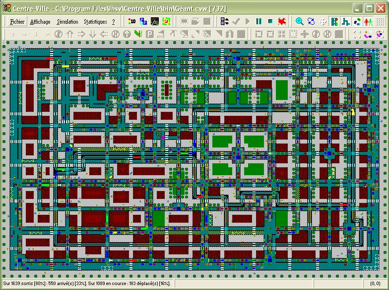
Les premiers éléments de base sont les parkings souterrains. On les relie en construisant d’abord les voies de circulation. Les voie se caractérisent par une direction et un sens. Plus précisément, une voie est un assemblage de cases. À partir de chacune d’elles on détermine sur quelles cases voisines un véhicule peut se déplacer. Les directions utilisées sont nord, est, sud et ouest.
Ensuite, sur les voies de circulation, on ajoute une signalisation. Cette dernière est essentiellement une signalisation de priorités : elle est constituée de stops, de cédez-le-passage et de feux. La signalisation de priorités permet de décider quel véhicule pourra se placer sur une case.
Tous les éléments entrant dans la définition du réseau sont là.
Pour pouvoir démarrer la simulation, on introduit des véhicules. L’ordinateur va générer des véhicules qui, partant d’un parking donné, auront pour mission d’arriver à un autre parking donné. Pour que la simulation soit équilibrée, il y aura toujours autant de véhicules partant d’un parking que de véhicules arrivant à un parking.
Depuis la version 2.2, parmi les véhicules, il y a des véhicules prioritaires. Ils ne sont pas soumis aux priorités et ne respectent aucune signalisation (cédez-le-passage, stops, feux et priorités à droite). Ils sont prioritaires à tout autre véhicule. Il y a les véhicules d’urgence (en rouge vif) et de police (en blanc) : ils sont reconnaissables par leur couleur mais aussi par un gyrophare clignotant (voir la zone de simulation). Entre eux, c’est le véhicule de police qui est prioritaire par rapport au véhicule d’urgence. Enfin, il y a 1% de véhicules d’urgence et 1% de véhicules de police.
Il est possible d’introduire des piétons dans la simulation. Ceux-ci se déplacent en dehors des voies et à travers celles-ci sur les passages piétons.
Depuis la version 5.2, il possible de définir des priorités piétons vis-à-vis des véhicules et des trams en plaçant des feux de piétons liés à des feux de circulation. Ces feux de piétons se placent aux extrémités des passages piétons.
Depuis la version 3.0, un réseau de bus peut être ajouté au réseau de véhicules. Les bus sortent d’un dépôt et passent d’un arrêt à l’autre indéfiniment.
Depuis la version 3.5, un réseau de trams peut être ajouté au réseau de véhicules. Les trams passent d’un arrêt à l’autre indéfiniment comme les bus.
Depuis la version 3.6, les taxis peuvent être ajoutés à la simulation. Les taxis partent des places de taxis pour y revenir une fois le piéton déposé.
Depuis la version 5.0, les places et files de parkings peuvent être ajoutées à la simulation. Elles complètent les parkings souterrains dans leur rôle de générateurs de missions de trajet.
Depuis la version 5.3, des vehlibs (véhicules de libre service) peuvent être ajoutés à la simulation. Un vehlib est choisi par un piéton et part toujours d’une place de vehlib à une autre.
Note importante sur le terme « parking » :
- Quand le mot « parking » est utilisé seul, il sous-entend souterrain (anciennement étape).
- Quand il s’agit de parking de surface, le mot « parking » est alors accompagné du mot file (file de parkings) ou du mot place (place de parking).
Centre-Ville permet de construire un réseau de voies de circulation dans un espace à deux dimensions représenté par un tore de 99 cases par 63 par défaut.
Pour visualiser ces différents éléments, voir la description de la zone de simulation.
Présentation de l’interface
Avant de lancer l’application Centre-Ville, assurez-vous d’avoir une résolution d’écran d’au moins 800×600 car dans cette résolution la fenêtre principale couvre tout l’écran pour une zone par défaut de 99×63.
La fenêtre principale est composée de quatre parties de haut en bas :
Le menu principal
Le menu principal traite des commandes générales de l’application :
Le menu Fichier
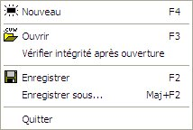
Les commandes permettant de créer, ouvrir et enregistrer un fichier de sauvegarde d’un réseau se situent dans le menu Fichier.
Les fichiers de sauvegarde des réseaux ont pour extension .cvw.
Ils sont également reconnaissables par leur icône 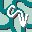.
Si vous double cliquez sur un de ces fichiers, l’application Centre-Ville s’exécute et l’ouvre.
Pour quitter Centre-Ville, choisissez la rubrique Quitter ou appuyez sur Alt+F4.
Compatibilité
Depuis la version 3.0, la compatibilité entre versions différentes de fichiers sauvegardés est gérée automatiquement. Seuls les fichiers enregistrés avec une version antérieure à la version 2.0 ne peuvent pas être ouverts avec la version 3.0 ou supérieure.
Intégrité
Jusqu’à la version 1.6 de Centre-Ville, pour chaque fichier ouvert, était vérifiée systématiquement l’intégrité de ses données. À présent (depuis la version 1.6.1), il faut cocher la rubrique Vérifier l’intégrité après ouverture.
Le menu Affichage
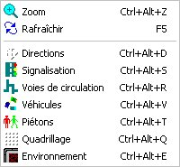
Ce menu permet de régler l’affichage des différents types d’éléments dans la zone de simulation :
- Zoom : Zoom avant (coché) ou zoom arrière (décoché). Le grossissement est ×2.
- Rafraîchir : Mise à jour immédiat de l’affichage de la zone de simulation
- Directions : Affichage (coché) ou masquage (décoché) des directions possibles sur les voies de circulation (zoom ×2 uniquement)
- Signalisations : Affichage (coché) ou masquage (décoché) de la signalisation (feux, priorités, arrêts de bus ou de tram, passages de bus ou piétons)
- Voies de circulation : Affichage (coché) ou masquage (décoché) des voies de circulation (chaussées et voies de tram)
- Véhicules : Affichage (coché) ou masquage (décoché) des voitures, des bus et des trams
- Piétons : Affichage (coché) ou masquage (décoché) des piétons
- Quadrillage : Affichage (coché) ou masquage (décoché) du quadrillage (un point au centre de chaque case)
- Environnement : Affichage (coché) ou masquage (décoché) de l’environnement, c’est-à-dire les décors (trottoirs, bâtiments, pelouses, arbres...)
Le menu Simulation
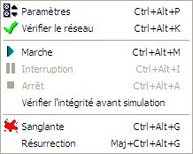
Ce menu regroupe le paramétrage et les commandes de la simulation :
Note : Tous les paramètres sont enregistrés dans les fichiers de sauvegarde.
Le menu Statistiques
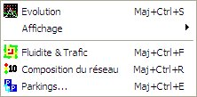
Ce menu regroupe l’accès aux différentes statistiques ainsi qu’au paramétrage d’affichage des statistiques d’évolution :
Le menu ?
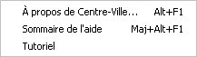
Ce menu permet d’obtenir des informations sur la version (rubrique À propos) et d’accéder au sommaire de l’aide que vous êtes en train de lire.
La rubrique Tutoriel est une page HTML qui permet de suivre les étapes de création d’un réseau complet « de A à Z ».
Paramètres de la simulation
Lorsque vous choisissez la rubrique Simulation | Paramètres ou lorsque vous appuyez sur Ctrl+Alt+P, vous obtenez une boîte de dialogue comme ceci :
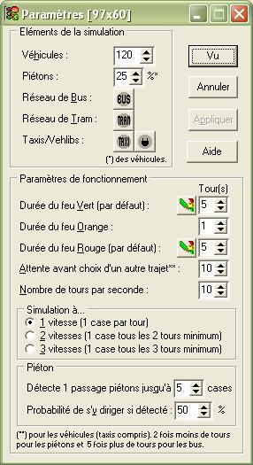
Éléments de la simulation
La première partie des paramètres est le nombre d’éléments à utiliser dans la simulation : les véhicules et les piétons (attention, le nombre de piétons à définir est un pourcentage du nombre de véhicules).
Les dimensions de la zone de simulation [colonnes × lignes] sont affichées dans le titre de la boîte de dialogue (depuis la version 4.0). Ils ne sont pas modifiables ici. Pour définir les dimensions de la zone, il faut créer une nouvelle simulation (rubrique Fichier | Nouveau).
Les possibilités de choix du nombre de véhicules est en fonction du nombre de parkings de telle sorte qu’il y ait toujours au moins 10 véhicules qui aillent d’un parking à un autre, et ce, pour chaque possibilité de trajet parking de départ/parking d’arrivée.
Depuis la version 3.0, le bouton 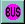 permet de définir le réseau de bus. Le bouton est grisé et inaccessible 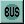 si aucun arrêt de bus n’est posé.
Depuis la version 3.5, le bouton 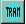 permet de définir le réseau de trams. Le bouton est grisé et inaccessible  si aucun arrêt de tram n’est posé.
si aucun arrêt de tram n’est posé.
Depuis la version 3.5, le bouton permet de définir les paramètres des taxis. Le bouton est grisé et inaccessible si aucune place de taxi n’est posée.
Depuis la version 5.3, le bouton permet de définir les paramètres des vehlibs. Le bouton est grisé et inaccessible si aucune place de vehlib n’est posée.
Paramètres de fonctionnement
La deuxième partie des paramètres concerne le comportement de la simulation :
- Combien de tours minimal dure un feu vert par défaut (c’est-à-dire à la création d’un feu)
- Combien de tours dure un feu orange (quel que soit le feu) ;
- Combien de tours minimal dure un feu rouge par défaut ;
- Combien de tours un véhicule attend avant de choisir un autre trajet ;
- Combien il y a de tours pendant une seconde (vitesse de simulation).
Pour les durées par défaut du feu vert et du feu rouge, un bouton 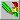 est disponible après avoir validé les modifications : il permet d’appliquer le paramètre à tous les feux du réseau existant.
Le paramètre de vitesse donne le nombre de vitesses à répartir de manière égale sur tous les véhicules. Ce paramètre est toujours initialisé à 1 vitesse à chaque nouvelle simulation. La vitesse est attribuée de manière régulière entre les véhicules.
Note : les véhicules prioritaires n’ont qu’une seule vitesse : la vitesse maximale, c’est-à-dire 1 case/tour.
Paramètres par défaut
Les valeurs affichées dans la boîte de dialogue des paramètres ci-dessus sont les valeurs par défaut à la création d’une simulation (les dimensions de la zone sont 99×63 par défaut).
Définition des dimensions de la zone de simulation
Depuis la version 4.0, les dimensions de la zone peuvent être définies. Cependant, cela ne peut se faire qu’au moment de créer une nouvelle simulation (rubrique Fichier | Nouveau). Cette boîte de dialogue apparaît alors :
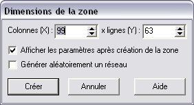
Par défaut, les dimensions sont 99×63 (correspondant à une fenêtre maximale pour une résolution 800×600 comme pour les versions antérieures à la version 4.0). Si une simulation était déjà ouverte, ses dimensions sont alors proposées. Pour créer une nouvelle simulation avec les dimensions saisies, il suffit de choisir le bouton Créer. Le bouton Annuler abandonne la création d’une nouvelle simulation.
Autres paramètres
Afficher les paramètres après création de la zone : montre les paramètres de la simulation juste après avoir appuyé sur le bouton Créer (action par défaut).
Générer aléatoirement un réseau : affiche la boîte de dialogue de génération aléatoire d’un réseau après avoir appuyé sur le bouton Créer et après l’affichage éventuel des paramètres.
Génération aléatoire d’un réseau
Depuis la version 4.2, il est possible de générer aléatoirement un réseau (voies de circulation automobile seulement) : Pour ce faire, il faut cocher la case Générer aléatoirement un réseau dans la boîte de dialogue de définition des dimensions de la zone de simulation, cette boîte de dialogue apparaît ensuite :
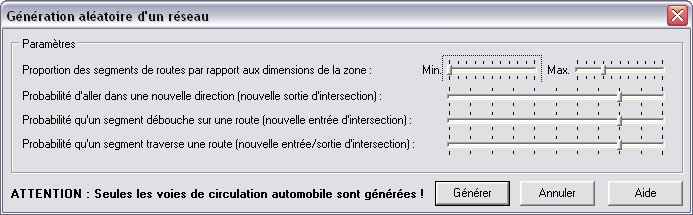
Le premier paramètre est l’intervalle de longueur des segments de voie générés par rapport à la longueur et la largeur de la zone. Par exemple, si la zone a une taille de 99×63 avec les paramètres ci-dessus, les segments de voies horizontaux feront de 1 à 29 de longueur (3×99/10) et verticalement de 1 à 18 de longueur (3×63/10).
Les probabilités sont exprimées en dixièmes : de 0/10 (jamais) à 10/10 (toujours).
Paramètres du réseau de bus
Pour pouvoir accéder aux paramètres du réseau de bus, il faut ouvrir la boîte de dialogue des paramètres de la simulation en choisissant la rubrique Simulation | Paramètres (Ctrl+Alt+P).
Si le nombre d’arrêts de bus est défini alors le bouton situé à droite apparaît sinon il apparaît .
Cliquez sur le bouton lorsqu’il n’est pas grisé pour faire apparaître la boîte de dialogue de paramétrage du réseau de bus :
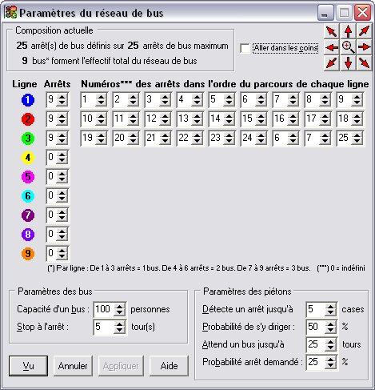
Attention, cet aspect n’est visible qu’en mode simulation (voir fin du paragraphe). En dehors du mode simulation, la colonne de cases à cocher n’apparaît pas et les champs ne sont pas grisés.
Composition du réseau de bus
Le premier cadre donne la situation de la composition des éléments du réseau de bus : le nombre d’arrêts de bus définis et le nombre de bus qui seront créés au lancement de la simulation.
Définition des lignes de bus
Le paramétrage du réseau de bus consiste tout d’abord à définir les lignes de bus en leur associant des arrêts de bus.
Chacune des 9 lignes de chiffres (de 1 à 9) représente une ligne de bus. Chaque ligne de bus est déterminée par une couleur et un numéro (première colonne). Les bus dans la simulation sont d’une seule couleur : la couleur de la ligne de bus.
Pour chaque ligne de bus il faut d’abord définir le nombre d’arrêts de bus. De plus, ces derniers doivent avoir été déjà définis sur le réseau routier () avant de pouvoir être associés à des lignes de bus.
Les arrêts de bus peuvent être posés en utilisant le bouton 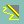 dans la barre de statut ou la rubrique Arrêt de bus/tram (Ctrl+A) en faisant clic droit sur la case souhaitée.
Un même arrêt peut bien entendu être utilisé par plusieurs lignes. Les bus passent par les arrêts désignés dans l’ordre du premier au dernier arrêt défini puis repassent à nouveau par le premier arrêt et ainsi de suite indéfiniment. Au lancement de la simulation, les bus sortent du dépôt de bus puis parcourent le réseau d’arrêt en arrêt suivant l’ordre défini.
Lorsqu’un arrêt de bus est défini, ce dernier clignote sur le réseau pour visualiser sa position. Il est fortement conseillé de placer les arrêts d’une même ligne sur le réseau puis de définir cette ligne avant de placer les arrêts des autres lignes.
En haut à droite des boutons de navigation sont à disposition pour vous permettre de naviguer dans la zone de simulation sans sortir des paramètres.
Une fois les lignes de bus définies, il y a quelques paramètres pour le fonctionnement et le comportement de la simulation :
Autres paramètres
Capacité d’un bus : Nombre maximal de personnes que peut prendre un bus.
Stop à l’arrêt : Nombre de tours minimal pendant lesquels chaque bus reste à un arrêt dès qu’il y arrive.
La suite des paramètres concernent uniquement le comportement des piétons vis-à-vis du réseau de bus.
Détecte un arrêt jusqu’à n cases : Comme pour les passages piétons, il s’agit du rayon de détection des piétons concernant les arrêts de bus. À chaque case, un piéton peut détecter un arrêt jusqu’à un nombre limité de cases. Une fois un arrêt détecté, il s’y dirige et attend un bus.
Probabilité de s’y diriger : Pourcentage de chance qu’un piéton décide de se diriger vers un arrêt de bus détecté.
Attend un bus jusqu’à n tours : Nombre de tours maximal pendant lesquels un piéton attendra qu’un bus arrive en restant immobile à côté de l’arrêt. Si aucun bus ne vient, il reprendra sa promenade.
Probabilité arrêt demandé : Pourcentage de chance qu’à chaque arrêt qu’une personne dans un bus décide de descendre à l’arrêt suivant.
Mode simulation
En mode simulation, les paramètres de lignes de bus ne sont pas modifiables (grisés).
Des cases à cocher à gauche de chaque numéro de ligne permettent de visualiser le trajet de la ligne de bus correspondante sur la zone de simulation.
Lorsque l’on coche une de ces cases, la boîte de dialogue est minimisée et le trajet de la ligne sélectionnée est affiché sur la zone de simulation.
Les numéros des arrêts de bus sont également affichés pour les repérer.
Cliquer sur la case revient à cliquer sur toutes les cases de toutes les lignes définies en une fois.
Paramètres du réseau de trams
Pour pouvoir accéder aux paramètres du réseau de trams, il faut ouvrir la boîte de dialogue des paramètres de la simulation en choisissant la rubrique Simulation | Paramètres (Ctrl+Alt+P).
Si le nombre d’arrêts de trams est défini alors le bouton situé à droite apparaît sinon il apparaît .
Cliquez sur le bouton lorsqu’il n’est pas grisé pour faire apparaître la boîte de dialogue de paramétrage du réseau de trams :
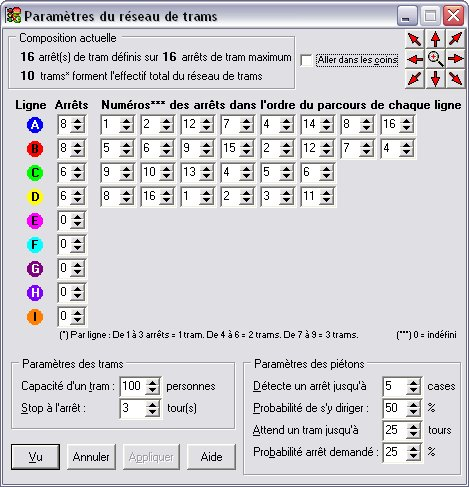
Attention, cet aspect n’est visible qu’en mode conception (voir début du paragraphe). En dehors du mode conception, une colonne de cases à cocher apparaît à gauche des numéros de lignes de trams et les champs sont grisés.
Composition du réseau de trams
Le premier cadre donne la situation de la composition des éléments du réseau de trams : le nombre d’arrêts de trams définis et le nombre de trams qui seront créés au lancement de la simulation.
Définition des lignes de trams
Le paramétrage du réseau de trams consiste tout d’abord à définir les lignes de trams en leur associant des arrêts de trams.
Chacune des 9 lignes de lettres (de A à I) représente une ligne de trams. Chaque ligne de trams est déterminée par une couleur et une lettre (première colonne). Les trams dans la simulation sont d’une seule couleur : la couleur de la ligne de trams.
Pour chaque ligne de trams il faut d’abord définir le nombre d’arrêts de trams. De plus, ces derniers doivent avoir été déjà définis sur le réseau routier (parties des voies de tram en jaune) avant de pouvoir être associés à des lignes de trams.
Les arrêts de trams peuvent être posés en utilisant le bouton dans la barre de statut ou la rubrique Arrêt de bus/tram (Ctrl+A) en faisant clic droit sur la case souhaitée.
Un même arrêt peut bien entendu être utilisé par plusieurs lignes. Les trams passent par les arrêts désignés dans l’ordre du premier au dernier arrêt défini puis repassent à nouveau par le premier arrêt et ainsi de suite indéfiniment. Au lancement de la simulation, chaque tram démarre à partir d’un arrêt.
On place les trams sur les premiers arrêts de leur ligne respective. Si un arrêt est déjà occupé, on le place sur l’arrêt suivant et ainsi de suite. S’il n’est pas possible de placer tous les trams au départ, un message d’erreur s’affiche et il faut revoir le réseau de trams.
Lorsqu’un arrêt de trams est défini, ce dernier clignote sur le réseau pour visualiser sa position. Il est fortement conseillé de placer les arrêts d’une même ligne sur le réseau puis de définir cette ligne avant de placer les arrêts des autres lignes.
En haut à droite des boutons de navigation sont à disposition pour vous permettre de naviguer dans la zone de simulation sans sortir des paramètres.
Une fois les lignes de trams définies, il y a quelques paramètres pour le fonctionnement et le comportement de la simulation :
Autres paramètres
Capacité d’un tram : Nombre maximal de personnes que peut prendre un tram.
Stop à l’arrêt : Nombre de tours minimal pendant lesquels chaque tram reste à un arrêt dès qu’il y arrive.
La suite des paramètres concernent uniquement le comportement des piétons vis-à-vis du réseau de trams.
Détecte un arrêt jusqu’à n cases : Comme pour les passages piétons, il s’agit du rayon de détection des piétons concernant les arrêts de trams. À chaque case, un piéton peut détecter un arrêt jusqu’à un nombre limité de cases. Une fois un arrêt détecté, il s’y dirige et attend un tram.
Probabilité de s’y diriger : Pourcentage de chance qu’un piéton décide de se diriger vers un arrêt de trams détecté.
Attend un tram jusqu’à n tours : Nombre de tours maximal pendant lesquels un piéton attendra qu’un tram arrive en restant immobile à côté de l’arrêt. Si aucun tram ne vient, il reprendra sa promenade.
Probabilité arrêt demandé : Pourcentage de chance qu’à chaque arrêt qu’une personne dans un tram décide de descendre à l’arrêt suivant.
Mode simulation
En mode simulation, les paramètres de lignes de trams ne sont pas modifiables (grisés).
Des cases à cocher à gauche de chaque numéro de ligne permettent de visualiser le trajet de la ligne de trams correspondante sur la zone de simulation.
Lorsque l’on coche une de ces cases, la boîte de dialogue est minimisée et le trajet de la ligne sélectionnée est affiché sur la zone de simulation.
Les numéros des arrêts de trams sont également affichés pour les repérer.
Cliquer sur la case revient à cliquer sur toutes les cases de toutes les lignes définies en une fois.
Paramètres des taxis
Pour pouvoir accéder aux paramètres des taxis, il faut ouvrir la boîte de dialogue des paramètres de la simulation en choisissant la rubrique Simulation | Paramètres (Ctrl+Alt+P).
Si le nombre de places de taxis est défini alors le bouton situé à droite apparaît sinon il apparaît .
Cliquez sur le bouton lorsqu’il n’est pas grisé pour faire apparaître la boîte de dialogue de paramétrage des taxis :
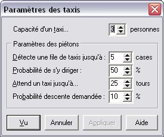
Paramètres
Capacité d’un taxi : Nombre maximal de personnes que peut prendre un taxi.
La suite des paramètres concernent uniquement le comportement des piétons vis-à-vis des taxis.
Détecte une file de taxis jusqu’à n cases : Comme pour les passages piétons, il s’agit du rayon de détection des piétons concernant les places de taxis. À chaque case, un piéton peut détecter une tête de file de taxis jusqu’à un nombre limité de cases. Une fois détectée, il s’y dirige et attend un taxi.
Probabilité de s’y diriger : Pourcentage de chance qu’un piéton décide de se diriger vers la tête d’une file de taxis.
Attend un taxi jusqu’à n tours : Nombre de tours maximal pendant lesquels un piéton attendra qu’un taxi arrive en restant immobile à côté de la tête de file. Si aucun taxi ne vient, il reprendra sa promenade.
Probabilité descente demandée : Pourcentage de chance qu’un piéton descende du taxi.
Paramètres des vehlibs
Pour pouvoir accéder aux paramètres des vehlibs, il faut ouvrir la boîte de dialogue des paramètres de la simulation en choisissant la rubrique Simulation | Paramètres (Ctrl+Alt+P).
Si le nombre de places de vehlibs est défini alors le bouton situé à droite apparaît sinon il apparaît .
Cliquez sur le bouton lorsqu’il n’est pas grisé pour faire apparaître la boîte de dialogue de paramétrage des vehlibs :
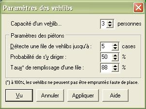
Paramètres
Capacité d’un vehlib : Nombre maximal de personnes que peut prendre un vehlib.
La suite des paramètres concernent uniquement le comportement des piétons vis-à-vis des vehlibs.
Détecte une place de vehlib jusqu’à n cases : Comme pour les passages piétons, il s’agit du rayon de détection des piétons concernant les places de vehlibs. À chaque case, un piéton peut détecter une place de vehlib jusqu’à un nombre limité de cases. Une fois détectée, il s’y dirige et prend un vehlib.
Probabilité de s’y diriger : Pourcentage de chance qu’un piéton décide de se diriger vers une place de vehlib.
Taux de remplissage d'une place : Au départ de la simulation, les places sont occupées par des vehlibs avec le taux de remplissage indiqué. Comme avertit le message qui suit l'astérisque, un taux de 100% empêche l'emprunt de vehlib par manque de place libre. Le taux par défaut (80%) permet un remplissage de 4/5 pour des groupes de 5 places et un réseau de vehlibs efficace.
Commandes de la simulation
Chaque commande de la simulation (voir ci-dessous) correspond à un bouton de la barre d’outils et un raccourci clavier (sauf la rubrique Vérifier l’intégrité avant simulation) : voir fin de cette rubrique.
Commandes générales
Les commandes générales de la simulation (Paramètres de la simulation et Lancement de la simulation) sont dans le menu déroulant Simulation du menu principal :
Vérifier l’intégrité avant simulation
Jusqu’à la version 1.6 de Centre-Ville, comme pour chaque fichier ouvert, était vérifiée systématiquement l’intégrité de ses données avant lancement d’une simulation. À présent (depuis la version 1.6.1), il faut cocher la rubrique Vérifier l’intégrité avant simulation.
Commandes relatives à la case sélectionnée
Les commandes relatives à la case sélectionnée dans la zone de simulation (où est situé le curseur ) sont dans le menu déroulant lorsque l’on clique droit sur la zone de simulation :
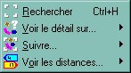
Chaque ligne correspond à un menu déroulant (sauf la rubrique Rechercher) :
Menu Détail
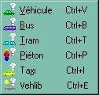
Chaque rubrique permet d’obtenir des informations détaillées sur un élément mobile de la simulation (véhicules, bus, trams ou piétons). Il correspond à l’élément sélectionné dans la zone de simulation. Si l’élément est suivi (voir ci-dessous), le curseur est toujours sur lui et l’affichage détaillé des informations le concernant suit son évolution. Si aucun élément n’est suivi, il s’agit de l’élément qui passe par la case sélectionnée (les informations ne restent pas longtemps si l’élément mobile arrive sur la case puis la quitte).
Menu Suivi
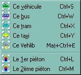
Les rubriques permettent de suivre l’élément sur la case sélectionnée sur la zone de simulation. Les rubriques actives (non grisées) montrent le type d’élément mobile qui se trouve sur la case sélectionnée. Il ne peut pas y avoir plus d’un élément à la fois (comme sur l’exemple ci-dessus) sauf 2 piétons sur une même cases (d’où les deux lignes de rubriques).
Menu Distances
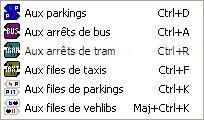
Les rubriques permettent d’afficher les distances aux parkings (1ère rubrique), aux arrêts de bus (2ème rubrique) ou aux arrêts de trams depuis la case sélectionnée. Chaque représente une direction possible et chaque ligne un parking ou un arrêt (suivant le type de distance).
Se reporter au paragraphe Les commandes de simulation de la rubrique Les barres d’outils.
Statistiques de la simulation
Il y a trois statistiques proposées : un graphe d’évolution, les chiffres concernant les véhicules d’un parking à un autre et les statistiques de fluidité et de trafic :
Statistiques sur la composition du réseau
Lorsque vous appuyez soit sur le bouton 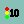, soit sur Maj+Ctrl+R ou lorsque vous choisissez la rubrique Statistiques | Composition du réseau, une boîte de dialogue comme suit s’affiche :

Elle donne des informations sur le nombre et la répartition des éléments du réseau.
Elle permet également de savoir s’il reste à définir des parkings, des arrêts de bus ou de trams ou encore des feux (colonne Dispo.)
Paramétrage de l’affichage des statistiques d’évolution
Lorsque vous choisissez le menu Statistiques | Affichage au menu principal, ce menu déroulant apparaît :
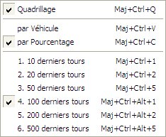
Il permet de configurer l’affichage du graphique d’évolution :
- La rubrique Quadrillage (Maj+Ctrl+Q) permet d’activer ou de désactiver le quadrillage par points.
- La deuxième partie du menu déroulant concerne la façon de présenter l’évolution de la simulation :
- soit par nombre de véhicules (Maj+Ctrl+V ou rubrique par Véhicule)
- soit par pourcentage (Maj+Ctrl+C ou rubrique par Pourcentage).
Seul l’affichage de la dernière courbe (couleur verte) varie selon le choix de la présentation : si l’évolution est présentée par pourcentage, la courbe des véhicules qui se sont déplacés représente la proportion des véhicules déplacés par rapport aux véhicules sortis qui n’ont pas encore rejoint leur parking d’arrivée.
- La troisième partie permet de fixer le nombre de tours soumis aux statistiques. Les statistiques concernent un certain nombre de derniers tours.
Les barres d’outils
La barre d’outils est composée de boutons (icônes) permettant d’accéder à la plupart des commandes existantes dans les différents menus (menu principal et menus déroulants).
Pour les accès directs au clavier, reportez-vous à la liste des raccourcis clavier.
La barre d’outils est divisée en 5 parties détachables séparément :
La barre d’outils Fichier
Elle correspond aux commandes du menu Fichier du menu principal.
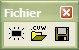
| Crée une nouvelle simulation (vide la zone de simulation). |
| 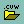 | Ouvre un fichier de simulation (extension cvw). |
| Enregistre le réseau courant dans un fichier (extension cvw). |
La barre d’outils Affichage
Elle correspond aux commandes du menu Affichage du menu principal.
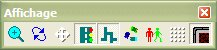
| Effectue un zoom x2 avant (bouton enfoncé) ou arrière (bouton relevé). |
| Rafraîchit la zone de simulation. |
| Affiche ou masque les directions possibles des voies. |
| Affiche ou masque la signalisation. |
| Affiche ou masque les voies de circulation. |
| 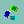 | Affiche ou masque les voitures, bus et trams. |
| 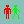 | Affiche ou masque les piétons. |
| Affiche ou masque le quadrillage. |
| 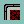 | Affiche ou masque l’environnement (nature et décors). |
La barre d’outils Simulation
Elle correspond respectivement aux commandes du menu Simulation du menu principal :
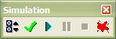
La barre d’outils Statistiques
Elle correspond aux commandes du menu Statistiques du menu principal.

| Affiche la composition du réseau. |
| 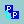 | Affiche (bouton enfoncé) ou masque (bouton relevé) les statistiques des véhicules parking à parking. |
| 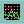 | Affiche ou masque les statistiques d’évolution. |
| 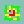 | Affiche les statistiques de fluidité et de trafic. |
La barre d’outils Informations
Elle correspond aux commandes du menu déroulant en mode simulation (clic droit sur la zone de simulation).
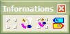
| Affiche (bouton enfoncé) ou masque (bouton relevé) la recherche d’éléments. |
| Affiche le menu déroulant d’informations sur les éléments mobiles. |
| 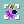 | Affiche le menu déroulant du suivi des éléments mobiles. |
| 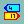 | Affiche le menu déroulant des distances aux parkings, arrêts de bus/tram, files de taxis/parkings. |
La barre d’outils Edition (case)
Elle correspond aux commandes du menu déroulant en mode conception (clic droit sur la zone de simulation) et quand une seule case est sélectionnée.
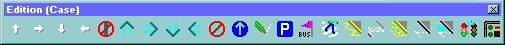
| Ajoute (bouton enfoncé) ou supprime (bouton relevé) une direction possible de voie de circulation. |
| Ajoute ou supprime un prolongement de voie de tram. |
| | Supprime la chaussée, les voies de trams. |
| Ajoute ou supprime l’obligation de continuer tout droit. |
| Affiche (bouton enfoncé) ou masque (bouton relevé) les priorités*. |
 | Affiche (bouton enfoncé) ou masque (bouton relevé) les priorités piétons*. |
| Ajoute ou supprime un parking souterrain. |
| 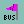 | Ajoute ou supprime un dépôt de bus. |
| 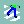 | Ajoute ou supprime un passage piéton. |
| Ajoute ou supprime un arrêt de bus ou tram. |
| Ajoute ou supprime un passage réservé aux bus. |
| Ajoute ou supprime une place de taxi. |
| Ajoute ou supprime une place de parking. |
| 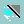 | Ajoute ou supprime une place de vehlib. |
 | Déplace le feu sélectionné puis attend le choix de la case destination (bouton enfoncé). |
 | Définit la nature (trottoir, immeuble) ou ajoute/retire un décor (arbre, pelouse). |
(*) Les priorités et priorités piétons sont exclusives dépendant de la présence de voies de circulation.
La barre d’outils Edition (sélection)
Elle correspond aux commandes du menu déroulant en mode conception (clic droit sur la zone de simulation) et quand plusieurs cases sont sélectionnées.
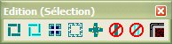
| Trace ou efface un segment de chaussée, de voies de tram. |
| Affiche un menu déroulant des tracés de bord de voies. |
| Trace ou efface un périphérique extérieur, intérieur. |
| Affiche la boîte de dialogue des types de carrefours. |
| Supprime la chaussée, les voies de trams. |
| Définit la nature de la zone (voies de circulation, trottoirs ou immeubles). |
La zone de simulation
Cette grande zone noire est la zone où est visualisée la simulation.
Il y a deux modes qui modifient le comportement de cette zone :
- le mode simulation
- le mode conception
Dans le mode simulation, cette zone n’est pas modifiable directement. Seule le déroulement de la simulation modifie la zone.
Dans le mode conception, on peut y poser et retirer les éléments qui constituent le réseau (voies, véhicules, priorités, feux, passages, arrêts, etc.) : voir Construction du réseau.
Dans les deux modes ont peut changer la visibilité des éléments de la simulation : voir Commandes d’affichage de la rubrique Les barres d’outils.
Le curseur sur la zone d’édition est matérialisé par un carré en pointillés : .
Si un message d’erreur s’affiche lors de la vérification du réseau et concerne une case, il s’affiche dans la barre d’état et un autre curseur (jaune) apparaît en clignotant : .
Plus d’informations
Les différents éléments de la simulation
| Fond de la zone (vide) |
 | Voie (chaussée) |
| | Voie de tram |
| 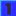 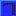 | Parkings souterrains (anciennement étapes) |
| | Véhicules |
| Vehlib (véhicule gris) |
| | Véhicules prioritaires (urgence en rouge, police en blanc) |
| | Piétons |
| Piéton(s) écrasé(s) |
 | Trottoirs |
| 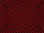 | Immeubles |
| | Bus, trams |
| Dépôt de bus |
| Arrêt de bus |
| Bus à l’arrêt |
| Passage réservé aux bus et aux véhicules prioritaires |
| | Arrêts de tram |
| File de (places de) taxis |
| Taxis |
| File de places de parking |
| Places de vehlibs (places libres/réservées) |
 | Feux |
| 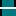 | Stop |
| Cédez-le-passage |
| Passage piéton |
| 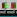 | Feux piéton |
| | Directions au carrefour (mode Zoom x2 uniquement) |
| Directions possibles |
 | Directions possibles avec obligation d’aller tout droit |
Les véhicules ne sont pas des éléments qui sont définissables lors de la construction mais dans les paramètres de la simulationPDLS car ils n’existent pas en dehors d’une simulation en marche.
Notes :
- Sur les véhicules occupant une case, les points jaunes matérialisent les phares (avant du véhicule) et les points rouges, les feux de stop (arrière du véhicule). Les véhicules prioritaires sont reconnaissables en rouge vif (urgence) et en blanc (police) avec un gyrophare clignotant.
- Depuis la version 5.0, les étapes sont appelées parkings (souterrains) et sont des carrés bleus numérotés (au lieu de rouges). Le bouton de pose passe d’un drapeau rouge à un « P » blanc sur fond bleu.
Les menus déroulants
Lorsque l’on clique avec le bouton droit de la souris sur la zone de simulation, un menu déroulant apparaît.
Il y a trois cas possibles : le mode conception avec une case sélectionnée ou plusieurs cases sélectionnées et enfin le mode simulation.
Menu conception avec une case sélectionnée
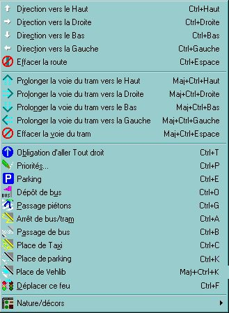
Remarque : Si la case – sur laquelle le menu déroulant est appelé – n’a pas de voies de circulation, alors la rubrique  est remplacée par la rubrique
est remplacée par la rubrique  .
.
Menu conception avec plusieurs cases sélectionnées
Menu simulation
Les 3 menus ci-dessus correspondent respectivement aux 3 barres d’outils suivantes&;nbsp;:
- Edition (case)
- Edition (sélection)
- Simulation
Modes conception et simulation
Les rubriques des menus déroulants sont détaillées en fonction de leur mode respectif :
La barre d’état
Elle permet l’affichage...
- de messages
- d’informations sur la case où est situé le curseur ou
- de la situation lorsqu’une simulation est en cours.
La barre d’état est divisée en quatre parties :
- La première partie est réservée aux messages (traitements en cours, messages d’erreur, situation de la simulation en cours, etc.)
- La deuxième partie donne les éléments que contient la case où est situé le curseur (type et numéro). Il s’agit des feux, des parkings et des véhicules
- Sur la troisième partie, s’affichent les directions possibles de la case sélectionnée
- La dernière partie contient les coordonnées du curseur (autrement la case sélectionnée) ou bien le nombre de tours lorsqu’une simulation est en cours.
Notez que la case de coordonnées (0, 0) est située sur le bord supérieur gauche.
Construction du réseau
La construction peut se résumer en quatre phases...
- Définir le niveau du challenge : paramétrer la simulation.
- Poser les fondations : définir les parkings qui doivent être reliés entre eux.
- Définir la structure : relier les parkings par un système de voies de circulation.
- Régler le système : définir les priorités aux intersections.
C’est parti...
- Tout d’abord, partez d’une situation vierge : choisissez Fichier | Nouveau.
- Ensuite, choisissez Paramètres | Simulation pour définir le nombre d’éléments : le nombre maximal de feux et de parkings et le nombre de véhicules pour la simulation (voir Menu Simulation).
- Tracez les voies de circulation* : Définissez les directions possibles en utilisant les boutons , , , et visualisez-les avec le bouton .
- Il est possible sur une case d’obliger les véhicules de continuer tout droit (autrement dit, de les interdire de tourner à gauche ou à droite) en activant le bouton : les flèches des directions possibles sur le réseau deviennent alors bleu ciel .
- Définissez les priorités (stop, cédez-le-passage et feux) pour chaque intersection* (cases voisines des cases ayant plus d’une direction possible) en utilisant le bouton ou en double cliquant sur les cases.
- Posez vos parkings souterrains (le nombre que vous avez défini) en utilisant le bouton .
Attention, chaque parking doit être posé sur une chaussée, c’est-à-dire sur une case ayant au moins une direction possible).
- Si vous souhaitez introduire des piétons, il faut qu’ils puissent – depuis des trottoirs – traverser les chaussées.
Pour cela, posez-y des passages piétons.
Attention, un passage piéton ne peut être posé que s’il traverse une voie de circulation (chaussée ou voie de tram).
De plus, la case sur laquelle doit être posé un passage piéton, doit au moins avoir une direction de circulation possible perpendiculaire au sens du passage piéton.
Pour poser (ou retirer) un passage piéton, utilisez le bouton .
- Vous pouvez ensuite définir des priorités entre piétons et voies de circulation en mettant des feux de piétons aux extrémités des passages piétons et lier des feux de circulation.
Utilisez le bouton pour placer et définir des feux de piétons.
- Vérifiez que le réseau est correct avant de lancer une simulation.
Pour ce faire, appuyez sur le bouton .
Le réseau est toujours vérifié avant le lancement de la simulation (connexité du réseau).
Vous pouvez également construire et paramétrer :
Remarques :
- Si vous utilisez un réseau de bus, vous devez définir obligatoirement un dépôt de bus d’où sortiront les bus au début de la simulation.
- En ce qui concerne les trams, utilisez les boutons , , et
 pour tracer les voies de tram.
pour tracer les voies de tram.
Lorsque l’on appuie sur un de ces boutons, la voie est tracée de la case voisine d’où vient le curseur en prenant la direction choisie correspondant au bouton.
Par exemple, si vous appuyez sur la touche fléchée ↑ puis sur le bouton , une voie permettant d’aller de la case du bas vers la case de droite sera ajoutée sur la case courante (ou retirée si elle existe déjà) : 
(*) Pour construire votre réseau, il y a plusieurs outils d’aide à la construction, voir ci-dessous.
Plus d’informations
Définition des priorités
Lorsque vous cliquez sur le bouton , vous obtenez une boîte de dialogue comme ceci :
La boîte de dialogue est non modale, c’est-à-dire que même affichée vous pouvez agir sur la zone de simulation, accéder aux menus, barres d’outils et zone d’édition. Les informations de cette boîte de dialogue sont celles de la case courante indiquée par le curseur . Si la case courante change, les informations affichées changent en temps réel.
Les quatre parties représentent les priorités dans les quatre directions : nord, est, sud et ouest. Seules les priorités dans les directions possibles de la case sont – bien entendu – modifiables. Les voies de tram peuvent avoir les mêmes priorités que les voies de circulation. Les priorités des voies de tram sont affichées en bleu (voir exemple ci-dessus pour les directions nord et sud).
Utilisez le bouton Appliquer pour valider les modifications apportées et rafraîchir la zone d’édition.
Le bouton devient que lorsque vous choisissez un feu (il faut appuyer sur Feu... puis sur Appliquer). Ce bouton permet de définir le feu.
Voici les conditions concernant la case courante pour lesquelles il est impossible de définir ou modifier les priorités (les priorités dans les 4 directions apparaissent grisées) :
- Il n’y a ni chaussée ni voie de tram, ou
- Une voie de tram traverse une chaussée, ou
- Il y a plus de deux directions possibles de voies de tram, ou
- Il y a un parking ou un dépôt de bus.
Définition des feux
Lorsque vous appuyez sur le bouton vous obtenez la boîte de dialogue suivante :
Cette boîte de dialogue permet de paramétrer les feux. Il est fortement conseillé de définir d’abord tous les feux (position et éventuellement l’état initial) avant de paramétrer le reste car pour chaque feu, on doit associer d’autres feux.
Comme pour la définition des priorités d’une case, elle est non modale. De plus, si vous changez de case, cette boîte de dialogue est fermée automatiquement.
La position du feu est indiquée en haut de la boîte de dialogue (coordonnées et sens). Suit ensuite son état initial, autrement dit sa couleur (inactif, vert, orange ou rouge). L’état inactif permet de désactiver un feu : il reste alors inactif durant toute une simulation et n’agit pas sur les véhicules.
Les autres paramètres du feu concernent son comportement et les autres feux qui y sont liés.
Avant de présenter les autres paramètres, il faut connaître quelles sont les situations successives d’un feu. Mais tout d’abord il faut définir ce qu’est un feu opposé :
| Le feu A est un feu opposé pour le feu B si le feu A doit être rouge pour que le feu B puisse passer au vert. |
À présent, voici quelles sont les situations successives d’un feu :
- Feu vert
- Le rouge est demandé par un des feux opposés
- Délai du vert dépassé
- Feu orange
- Délai du feu orange dépassé
- Feu rouge : définition du ou des prochains feux à passer au vert
- Délai du feu rouge dépassé
- Attente de l’arrivée d’un véhicule dans le cas de ce type d’attente
- Un des feux opposés est vert
- Demande de passer au vert : le rouge est demandé aux feux opposés
- Les feux opposés (feux devant être rouges) sont tous rouges
- Prochain feu à passer au vert
Notes :
- Les situations 8, 9, 10 et 11 sont court-circuitées si la situation 12 arrive entre les situations 7 et 8
- La situation 6 entraîne la situation 12 pour les prochains feux à passer au vert
- La situation 10 entraîne pour les feux opposés la situation 2.
Définition des paramètres liés au comportement du feu
Les passages au feu vert ou au feu rouge sont déclenchés en fonction de la situation du carrefour.
Pour qu’un feu puisse passer au vert, il faut :
- que la durée du rouge soit écoulée
- qu’il soit le ou l’un des prochains feux à passer au vert
- que tous les feux opposés soient au rouge.
Par contre, un feu peut être réglé pour qu’il réagisse en fonction de l’arrivée d’un véhicule (bouton radio Demande le feu vert... dès qu’un véhicule arrive). Dans ce cas, si un véhicule est immobilisé devant le feu, ce dernier demande le vert aux feux opposés dès qu’un de ces derniers est vert. Il passe alors au vert dès que tous les feux opposés sont rouges.
Pour qu’un feu passe au rouge, il faut d’abord que la durée du vert soit écoulée. Ensuite, un feu peut être paramétré pour qu’il passe au rouge dès qu’un feu opposé le lui demande (bouton radio Passe au rouge dès... qu’un feu le demande).
Définition des feux associés
Pour définir un ou plusieurs feux associés (les feux devant être rouges et les prochains feux verts) :
- Cliquer sur le bouton : il se met en position enfoncée.
- Double cliquer sur le ou les feux à sélectionner.
- Lorsqu’un feu est sélectionné, il apparaît avec ses trois couleurs allumées (vert, orange et rouge).
- Pour retirer un feu de la sélection, il suffit de double cliquer à nouveau dessus. Le nombre courant de feux sélectionnés est affiché à gauche du bouton .
- Une fois la sélection des feux terminée, cliquer sur le bouton .
Plus d’informations
Exemple de pose de feux dans le tutoriel de création d’un réseau
Définition des priorités piétons
Lorsque vous cliquez sur le bouton , vous obtenez une boîte de dialogue comme ceci :
Comme pour la définition des priorités d’une case, elle est non modale. Les informations de cette boîte de dialogue sont celles de la case courante indiquée par le curseur . Si la case courante change, les informations de cette fenêtre changent également.
Les 4 boutons représentent les priorités piétons vis-à-vis des voies de circulation (chaussée et voie de tram) dans les 4 directions : nord, est, sud et ouest. Seules les priorités dans les directions où se trouve un passage piétons sont – bien entendu – modifiables :
- Quand un bouton est enfoncé, cela signifie qu’un feu de piéton se situe au pied du passage piéton.
- Quand un bouton est relevé et non grisé, cela signifie qu’il est possible de poser un feu de piétons sous réserve que le passage piétons ne soit pas un cul-de-sac pour les piétons.
- Pour placer ou modifier un feu de piétons, il faut cliquer une fois sur le bouton si ce dernier est relevé (création) et deux fois si celui-ci est enfoncé (modification). Dans ces deux cas, la boîte de dialogue de définition du feu de piétons s’affiche.
- Pour supprimer un feu de piétons, il faut cliquer une fois sur le bouton si ce dernier est enfoncé.
- Utilisez le bouton Appliquer pour valider les modifications apportées et rafraîchir la zone d’édition.
Important : Un feu de piétons ne peut être placé que sur une case qui n’est pas traversée par des voies de circulation et qui est adjacente à un passage piéton.
Définition des feux de piétons
Lorsque vous appuyez sur le bouton de la boîte de dialogue de définition des priorités piétons, vous obtenez la boîte de dialogue suivante :
Elle permet de paramétrer les feux de piétons. Il est fortement conseillé de poser d’abord tous les feux de piétons liés avant de les paramétrer un par un.
Comme pour la définition des priorités d’une case, elle est non modale. De plus, si vous changez de case, cette boîte de dialogue est fermée automatiquement.
La position du feu est indiquée en haut de la boîte de dialogue (coordonnées et sens). Suit ensuite son état initial, autrement dit sa couleur (inactif, vert ou rouge). L’état inactif permet de désactiver un feu : il reste alors inactif durant toute la simulation et agit ni sur les piétons ni sur les feux de circulation.
La durée de traversée indiquée à droite du bouton indique le nombre de tours nécessaires à un piéton pour traverser la voie en empruntant le passage piétons. Ce nombre de tours s’intercale entre le moment où le feu de piétons passe au rouge et le moment où le(s) feu(x) de circulation passent au vert. Cette phase permet aux piétons qui ont entamé la traversée de la finir sans être inquiété par les véhicules ou trams (surtout si le mode « sanglant » est activé).
Les autres paramètres sont les mêmes que ceux des feux de circulation sachant que les piétons correspondent aux véhicules.
Plus d’informations
Exemple de pose de feux dans le tutoriel de création d’un réseau
Outils de construction
Tout ce qui permet la construction du réseau est disponible dans les barres d’outils.
Plus d’informations
Outils concernant une case sélectionnée
Outils concernant plusieurs cases sélectionnées
Outils concernant une case sélectionnée
Les outils disponibles apparaissent par un clic droit sur une case de la zone de simulation avec le menu dérulant suivant qui s’ouvre :
Ils sont disponibles également dans la barre d’outils Edition (case).
Remarque : Si la case – sur laquelle le menu déroulant est appelé – n’a pas de voies de circulation, alors la rubrique est remplacée par la rubrique .
Directions
But : Permet d’effacer ou de tracer les chaussées et détermine leurs directions possibles. Sur chaque case par laquelle une voie de circulation passe, doivent être indiquées toutes les directions vers lesquelles les véhicules pourront se diriger. Si la direction existe déjà, elle est retirée.
Contrainte : la case ne doit pas avoir de passages piétons, passages de bus, d’arrêt de bus et, dans le même sens, il ne doit pas y avoir de feu, de cédez-le-passage, de stops ni de voie de tram.
Raccourcis clavier : Ctrl+↑, Ctrl+→, Ctrl+↓, Ctrl+←
Effacement de la route
But : Permet d’effacer la chaussée (efface toutes les directions possibles).
Contrainte : Si une des contraintes indiquées ci-dessus empêche la suppression de directions, elles ne sont pas retirées.
Raccourcis clavier : Ctrl+Suppr
Prolongement de voie de tram
But : Permet d’effacer ou de tracer les voies de tram et détermine les directions possibles. Sur chaque case par laquelle une voie de tram passe, doivent être indiquées toutes les directions vers lesquelles les trams pourront se diriger. Si la direction existe déjà, elle est retirée.
Contrainte : la case ne doit pas avoir de passages piétons, d’arrêt de bus et, dans le même sens, il ne doit pas y avoir de feu, de cédez-le-passage, de stops ni de chaussée.
Raccourcis clavier : Maj+Ctrl+↑, Maj+Ctrl+→, Maj+Ctrl+↓, Maj+Ctrl+←
Effacement de la voie de tram
But : Permet d’effacer la voie de tram (efface toutes les directions possibles).
Contrainte : Si une des contraintes indiquées ci-dessus empêche la suppression de directions, elles ne sont pas retirées.
Raccourcis clavier : Maj+Ctrl+Suppr
Obligation d’aller Tout droit
But : Permet d’obliger de continuer tout droit si la direction existe. Elle interdit donc aux véhicules de changer de direction.
Contrainte : Aucune.
Raccourcis clavier : Ctrl+T
Définition des priorités
But : Permet de définir les priorités dans les 4 directions : priorités à droite, feux, cédez-le-passage et stop. Voir Définition des priorités.
Contrainte : Voie de circulation sur la case (chaussée ou voie de tram).
Raccourcis clavier : Ctrl+P
Définition des priorités piétons (feux)
But : Permet de définir les priorités piétons dans les 4 directions. Voir Définition des priorités piétons piétons.
Contrainte : Pas de voies de circulations sur la case (chaussée ou voie de tram).
Raccourcis clavier : Ctrl+N
Parking (souterrain) – anciennement étape
But : Permet de poser ou de retirer un parking. Les parkings sont les origines et destination des véhicules (sauf bus et trams). Leur disposition sur la zone de simulation constitue la base de l’équilibre du réseau.
Contrainte : Aucune (à la conception). À la vérification du réseau, il faudra au moins une entrée vers chaque parking ainsi qu’une sortie depuis chaque parking.
Raccourcis clavier : Ctrl+E
Dépôt de bus
But : Permet de poser ou de retirer un dépôt de bus. C’est de là que sortent tous les bus de la simulation. Sa position est donc stratégique pour le fonctionnement du réseau de bus.
Contrainte : Aucune (à la conception). À la vérification du réseau, il faudra au moins une sortie mais aucune case ne doit être dirigée sur le dépôt de bus (sortie seule).
Raccourcis clavier : Ctrl+O
Passage piéton
But : Permet de poser ou de retirer un passage piéton. C’est le seul moyen donné aux piétons de traverser les chaussées et voies de tram.
Contrainte : Il ne doit pas y avoir deux directions possibles perpendiculaires (chaussées ou voie de tram) et il doit y avoir au moins un des deux côtés du passage accessibles aux piétons.
Raccourcis clavier : Ctrl+G
Arrêts de bus ou de tram
But : Permet de poser ou de retirer un arrêt de bus ou de tram. C’est par là que les piétons peuvent attendre, entrer ou sortir des bus ou des trams. Voir Paramètres du réseau de bus et Paramètres du réseau de trams.
Contrainte : Il ne doit y avoir qu’une direction possible sur la chaussée et qu’un sens possible sur la voie de tram et il ne doit pas y avoir d’arrêt des deux côtés.
Raccourcis clavier : Ctrl+A
Passage réservés aux bus
But : Permet de poser ou de retirer un passage réservé aux bus. Ils permettent de restreindre une chaussée aux bus et aux véhicules prioritaires (urgence, police).
Contrainte : Aucune (à la conception). À la vérification du réseau, ils ne doivent pas provoquer de blocages pour les véhicules ne pouvant pas emprunter les passages de bus.
Raccourcis clavier : Ctrl+B
Place de taxi
But : Permet de poser ou de retirer une place de taxi. Elle permet d’ajouter un taxi à la simulation. Au lancement de celle-ci, un taxi sera posé sur cette case.
Contrainte : Aucune (à la conception). À la vérification du réseau, ils ne doit pas y avoir plus d’une file de taxis qui soit dirigée vers une place de taxi.
Raccourcis clavier : Ctrl+C
Place de parking
But : Permet de poser ou de retirer une place de parking. Elle permet d’ajouter un point de départ et d’arrivée pour un véhicule autre que depuis ou vers un parking souterrain. Au lancement de la simulation, de chaque place de parking, partira un véhicule et vers chaque place de parking, se destinera un véhicule.
Contrainte : Aucune (à la conception). À la vérification du réseau, ils ne doit pas y avoir plus d’une file de parkings qui soit dirigée vers une place de parking.
Raccourcis clavier : Ctrl+K
Place de vehlib
But : Permet de poser ou de retirer une place de vehlib. Elle permet d’ajouter un point de départ et d’arrivée pour un vehlib. Au lancement de la simulation, de chaque place de vehlib pourra partir un vehlib emprunté par un piéton à condition qu'une autre place de vehlib soit libre auquel cas, elle sera réservée au moment où le vehlib quittera sa place.
Contrainte : Aucune.
Raccourcis clavier : Maj+Ctrl+K
Déplacement d’un feu
But : Permet de déplacer un feu d’une case à une autre case. Pour déplacer un feu, il suffit de cliquer sur une case comportant un feu puis sur le bouton ou la rubrique de déplacement de feu puis sur la case destination et à nouveau sur le bouton ou la rubrique de déplacement de feu.
Contrainte : La case origine doit comporter un feu et la case destination doit avoir la direction possible correspondant au feu à déplacer.
Raccourcis clavier : Ctrl+F
Nature/décors
But : Permet de changer la nature d’une case et/ou de poser des éléments de décoration. Si la nature est une zone piétonne (trottoir), il est possible de poser un arbre (Ctrl+*) ou une pelouse (Ctrl+L). Cette dernière peut être également définie dans une sélection de plusieurs cases (voir Définition de la nature d’une zone). Trottoir et Immeuble (toit) sont des natures.
Contrainte : La case sélectionnée ne doit pas comporter de voies de circulation (chaussée et voie de tram).
Raccourcis clavier : Aucun.
Outils concernant plusieurs cases sélectionnées
Les outils de construction sont disponibles lorsque vous sélectionnez plusieurs cases en faisant glisser la souris (bougez la souris en maintenant le bouton gauche de la souris enfoncé). Le nombre de cases sélectionnées (nombre de lignes et de colonnes) s’affiche en même temps en bas à gauche sur la barre d’état.
Dès la sélection terminée, relâchez le bouton de la souris. Ensuite, cliquez avec le bouton droit de la souris n’importe où dans la zone de simulation, vous obtenez le menu suivant :
Il contient tous les outils de construction suivants :
Segment de route
But : Trace ou efface un segment de route allant de la première à la dernière case sélectionnée si la sélection contient une ligne ou une colonne. Si la sélection contient deux lignes ou deux colonnes, avant une route en double sens est tracée ou effacée (allant de la première à la dernière case et vice versa).
Contrainte : La sélection doit contenir 1 ligne ou 1 colonne pour une route en sens unique ; 2 lignes ou 2 colonnes pour une route en double sens.
Raccourci clavier : Ctrl+0 (zéro)
Segment de voie de tram
But : Trace ou efface un segment de voie de tram allant de la première à la dernière case sélectionnée si la sélection contient une ligne ou une colonne.
Contrainte : La sélection doit contenir 1 ligne ou 1 colonne.
Raccourci clavier : Ctrl+5
Angles droits de route...
Il s’agit d’un menu déroulant qui affiche 4 rubriques :

But : Trace ou efface un double segment de route dont le raccord fait un angle droit sur un des 4 bords choisis (inférieur/supérieur gauche/droit). La route tracée ou effacée est en sens unique et correspond au sens de la sélection (sens du glissé de souris).
Contrainte : La sélection doit contenir au moins 2 colonnes ou 2 lignes.
Raccourci clavier : Ctrl+7, Ctrl+9, Ctrl+3, Ctrl+1. Le coin où est situé le chiffre du raccourci clavier sur le pavé numérique correspond au coin du bord à tracer ou à effacer. Attention : le chiffre ne doit pas être tapé sur le pavé numérique.
Périphérique...
Il s’agit d’un menu déroulant qui affiche 2 rubriques :
Périphérique Extérieur
But : Trace ou efface une route qui boucle faisant tout le bord de la sélection dans le sens inverse des aiguilles d’une montre.
Contrainte : La sélection doit contenir au moins 2 colonnes ET 2 lignes.
Raccourci clavier : Ctrl+X
Périphérique Intérieur
But : Trace ou efface une route qui boucle faisant tout le bord de la sélection dans le sens des aiguilles d’une montre.
Contrainte : La sélection doit contenir au moins 2 colonnes ET 2 lignes.
Raccourci clavier : Ctrl+I
Remarque : Pour faire un périphérique en double sens, il faut d’abord tracer le Périphérique Extérieur puis sélectionner toutes les cases à l’intérieur du périphérique tracé (exclu) puis tracer le Périphérique Intérieur.
Note sur tous les outils de type Tracer/Effacer ci-dessus :
- Si la route à tracer existe déjà, elle est effacée ce qui implique que choisir deux fois la même opération sur la même sélection efface la route qui vient d’être tracée.
- Les priorités et parkings ne sont pas supprimés dans les opérations d’effacement de route ainsi que la direction sur laquelle est située la priorité.
Carrefours
But : Permet de poser des carrefours types suivant le nombre de cases sélectionnées. Une fenêtre apparaît avec des carrefours types affichés suivant le nombre de lignes et de colonnes sélectionnées (voir ci-dessous).
Contrainte : La sélection doit contenir 3 colonnes et 4 lignes ; 4 colonnes et 3 lignes ; 4 lignes et 4 colonnes ; 6 lignes et 6 colonnes ou 8 lignes et 8 colonnes.
Raccourci clavier : Ctrl+Q
Pour plus d’informations : voir la rubrique Carrefours.
Suppression des routes
But : Toutes les routes se trouvant dans la sélection sont effacées, les éléments inclus compris (feux, arrêts de tram, passages piétons, etc.). Une confirmation est demandée pour la suppression de chaque feu et chaque arrêt de bus seulement.
Contrainte : aucune.
Raccourci clavier : Ctrl+Suppr
Suppression des voies de tram
But : Toutes les voies de tram se trouvant dans la sélection sont effacées, les éléments inclus compris (feux, arrêts de tram, passages piétons, etc.). Une confirmation est demandée pour la suppression de chaque feu et chaque arrêt de tram seulement.
Contrainte : aucune.
Raccourci clavier : Maj+Ctrl+Suppr
Définition de la nature de la zone
But : Une zone est soit réservée aux voies de circulation (routes ou voies de tram), soit réservée aux piétons (trottoirs), soit réservée aux bâtiments. Il n’est cependant pas possible de changer la nature des cases déjà occupées par une voie de circulation (route ou voie de tram).
Contrainte : aucune.
Raccourci clavier : Maj+N
Pour plus d’informations : voir la rubrique Définition de la nature d’une zone.
Copie vers un fichier
But : Permet d’enregistrer la sélection dans un fichier de sauvegarde (.cvw). Ceci a pour but principal d’éliminer des bordures inutilisées.
Contrainte : zone minimale : 8x8. Il n’est pas possible d’éliminer des parties contenant des éléments de la simulation sauf les voies de circulation, décors, passages réservés (piétons & bus) et signalisation horizontale de priorité (stops & cédez-le-passage).
Raccourci clavier : Ctrl+F12
Carrefours
Lorsque vous sélectionnez une zone en mode conception puis que vous appuyez sur le bouton ou sur Ctrl+Q ou que vous choisissez la rubrique Carrefours..., une boîte de dialogue de ce type s’affiche :
Certains boutons sont grisés suivant le nombre de lignes et de colonnes de cases sélectionnées (indiquées au dessus de chaque bouton).
Il faut cliquer sur le bouton correspondant au carrefour que vous souhaitez construire à l’endroit de la sélection.
Attention : Tout ce qui est dans la sélection sera alors écrasé (une confirmation est demandée).
Remarque : Un seul groupe de carrefours correspondant au même nombre de colonnes et de lignes sélectionnées sera accessible en même temps. Cette fenêtre ne peut apparaître avec tous les groupes accessibles. La figure n’est là que pour montrer tous les carrefours mis à disposition.
Boutons de navigation
Deux boîtes de dialogue ont des boutons de navigation dans le coin supérieur droit :
Les flèches permettent de déplacer le curseur sur le réseau de la simulation. Le bouton de zoom correspond au bouton de zoom de la barre d’outils Affichage.
La case à cocher Aller dans les coins permet d’utiliser les touches fléchées pour aller dans les bords et les coins du réseau de la simulation.
Définition de la nature d’une zone
Depuis la version 3.8, lorsque vous sélectionnez une zone de la simulation puis que...
- soit vous appuyez sur le bouton de la barre d’outils Edition (Sélection)
- soit vous choisissez la rubrique Définition de la nature de la zone en cliquant droit
- soit vous appuyez sur Ctrl+N
cette boîte de dialogue apparaît :
Elle permet de définir la nature de la zone sélectionnée. Cela permet de réserver une zone :
- pour un usage précis : soit pour les véhicules (voies de circulation), soit pour les piétons (trottoirs)
- pour y définir des immeubles (ils auront une fonction pour les versions futures...).
Pour l’instant, les piétons ne peuvent pénétrer dans les immeubles mais ils pourront y entrer et en sortir à la manière des véhicules entrant et sortant des parkings, dans une prochaine version...
Il suffit de choisir la nature souhaitée pour la zone sélectionnée puis d’appuyer sur le bouton Appliquer :
- Si vous ne souhaitez pas changer les cases qui ont déjà une nature trottoirs ou immeubles, ne cochez pas la case Ecraser si autre nature. Si elle est cochée, toute la zone aura la nature choisie.
- Si vous choisissez Trottoirs, vous pouvez alors également demander à couvrir la zone de pelouse depuis la version 3.9.
Comme l’indique la note en bas de la boîte de dialogue, les cases déjà utilisées par les voies de circulation (routes et voies de tram) ne peuvent changer de nature et ne sont donc pas concernées par la modification.
Remarque : Une fois la boîte de dialogue affichée, il est possible de modifier la nature d’autres zones (boîte de dialogue non modale) mais surtout de pouvoir modifier la nature d’une seule case (la case où se situe le curseur s’il n’y a pas de sélection).
Lancement de la simulation
Pour lancer la simulation, appuyez sur le bouton .
Pour que la simulation puisse se lancer, il faut que le réseau soit correct. La vérification est automatiquement lancée comme si vous aviez appuyé sur le bouton .
Après la vérification du réseau, celui-ci est sauvegardé automatiquement. Un nom de fichier vous est demandé si le réseau n’a pas encore été enregistré.
Durant la simulation, la première partie de la barre d’état affiche les informations suivantes :
- le nombre et la proportion de véhicules sortis
- le nombre et la proportion de véhicules arrivés (par rapport aux nombre de sortis)
- le nombre de véhicules encore en course (sortis qui ne sont pas encore arrivés)
- le nombre et la proportion de véhicules déplacés (par rapport au nombre encore en course).
La quatrième partie de la barre d’état affiche le nombre de tours passés.
Lorsque tous les véhicules sont arrivés, la simulation s’arrête.
Les véhicules sont représentés par des rectangles de couleur. Pour savoir dans quels sens ils se dirigent, l’avant du véhicule a deux points jaunes (phares) et l’arrière a deux points rouges (feux de stop).
Boutons de la barre d’outils Simulation
Lorsqu’une simulation est en cours, les boutons et sont actifs et permettent respectivement d’interrompre et de stopper la simulation.
Lorsque vous interrompez une simulation, appuyez sur le bouton pour poursuivre la simulation.
Mode sanglant
Depuis la version 4.3, il est possible d’utiliser le mode sanglant (option cochée dans le menu Simulation) dans lequel les piétons ne peuvent pas bloquer sur les voies, véhicules, bus, trams et taxis.
Depuis la version 4.3.1, il est possible de ressusciter tous les piétons écrasés. Attention, cette commande ne désactive pas le mode sanglant.
Parkings
Depuis la version 5.0, les étapes deviennent des parkings souterrains et il est possible de définir des places de parking en surface dans le même but que les parkings souterrains anciennement étapes : faire partir et arriver des véhicules des ou vers ces places de parking.
Informations sur les éléments de la simulation
Au cours de la simulation, il est possible d’obtenir des informations et visualiser les statistiques en temps réel :
Après avoir interrompu ou arrêté une simulation, vous avez un bilan :
On vous demande alors si vous souhaitez visualiser les statistiques de fluidité et de trafic .
Evolution générale de la simulation
Lors du déroulement d’une simulation, lorsque l’on appuie sur le bouton ou sur Maj+Ctrl+S ou que l’on choisit la rubrique Statistiques | Evolution du menu principal une boîte de dialogue de ce type apparaît :
Les courbes représentent un nombre de véhicules (en ordonnées) par tour (en abscisses).
L’évolution de la simulation est représentée par trois courbes :
- celle des véhicules sortis du parking de départ (couleur jaune) ;
- celle des véhicules qui ont rejoint le parking d’arrivée (couleur rouge) ;
- celle des véhicules qui se sont déplacés (couleur verte).
La taille de la fenêtre est modifiable et il est possible de paramétrer l’affichage.
Statistiques de fluidité et de trafic
Lorsque la simulation se termine ou lorsqu’on l’interrompt ou on l’arrête, un message demande si l’on souhaite visualiser les statistiques de fluidité et de trafic (il n’est pas possible de les visualiser lorsque la simulation est en marche).
Cependant lorsque la simulation est interrompue, il est possible d’y accéder à nouveau :
- En cliquant sur le bouton .
- En choisissant la rubrique Fluidité & Trafic dans le menu Statistiques du menu principal.
Dans tous les cas une boîte de dialogue de ce type apparaît :
Les couleurs du réseau changent et permettent de donner une situation globale immédiate des statistiques avec les couleurs dont la palette signalée en légende indique l’ordre de grandeur.
Le type de statistiques par défaut est la fluidité (attente des véhicules en nombres de tours) : le bouton radio Attente est sélectionné par défaut. Si l’on souhaite voir la situation globale du trafic, il suffit de cliquer sur le bouton radio Trafic.
Il est possible d’affiner les statistiques en choisissant les parkings de départ et/ou d’arrivée en cochant la ou les cases correspondantes puis de choisir un numéro de parking à droite.
Les calculs de totaux, de moyennes et de valeurs maximales sont effectués à chaque fois que l’on modifie les paramètres précédents. De la même façon, la visualisation des statistiques est rafraîchie à chaque changement des paramètres.
Depuis la version 3.0, en haut à droite des boutons de navigation sont à disposition pour vous permettre de naviguer dans la zone de simulation sans sortir des paramètres. De plus, le détail des statistiques pour la case sélectionnée s’affiche dans la barre de statut.
Statistiques des véhicules d’un parking à un autre
Lors du déroulement d’une simulation, lorsque l’on appuie sur le bouton ou sur Maj+Ctrl+E ou encore lorsque l’on choisit la rubrique Statistiques | Parkings du menu principal, une boîte de dialogue de ce type apparaît :
Le tableau de droite varie suivant le nombre de parkings (liste à gauche).
Ces statistiques permettent de voir si des véhicules font des détours (1er onglet) ou s’arrêtent (2ème onglet).
Plus les chiffres sont petits, plus le réseau est efficace. Le tableau de gauche rappelle la position des parkings.
Affichage des distances jusqu’aux parkings
Lorsque le curseur est sur une case traversée par une route , il est possible d’obtenir les distances depuis le point indiqué par le curseur jusqu’aux différents parkings (en nombre de cases, unité de longueur dans la simulation).
Ceci s’obtient en appuyant sur le bouton puis sur ou sur Ctrl+D ou alors en choisissant la rubrique Voir les distances... | Aux parkings après avoir fait clic droit sur la zone de simulation.
Une fenêtre de ce type s’affiche :

Attention : Ne pas confondre parkings (sous-entendus souterrains) et files ou places de parkings (sous-entendues de surface).
Pour les distances aux files de parkings sous-entendues de surface, voir Affichage des distances jusqu’aux files de parkings .
Dans ce tableau, il y a une ligne par parking destination (dont le n° est indiqué dans la première colonne) et une colonne par direction (indiquée par les flèches dans la première ligne).
Si le curseur a été positionné sur une intersection, il y a autant de colonnes que de directions possibles à partir du point où est situé le curseur.
Il y a donc une distance par parking et par direction possible.
Depuis la version 3.5, comme certains véhicules peuvent emprunter les passages réservés aux bus – c’est-à-dire bien entendu les bus mais aussi les véhicules prioritaires (police, urgence) – il y a donc deux distances possibles : l’un tient compte des couloirs de bus (case Avec couloirs de bus cochée) et l’autre pas (case décochée).
Par défaut la case est décochée (la plupart des véhicules n’empruntent pas les couloirs de bus).
Affichage des distances jusqu’aux arrêts de bus
Depuis la version 3.0, lorsque le curseur est sur une case traversée par une route , il est possible d’obtenir les distances depuis le point indiqué par le curseur jusqu’aux différents arrêts de bus (en nombre de cases, unité de longueur dans la simulation).
Ceci s’obtient en appuyant sur le bouton puis sur ou sur Ctrl+A ou alors en choisissant la rubrique Voir les distances... | Aux arrêts de bus après avoir fait clic droit sur la zone de simulation.
Une fenêtre de ce type s’affiche :
Dans ce tableau, il y a une ligne par arrêt de bus (dont le n° est indiqué dans la première colonne) et une colonne par direction (indiquée par les flèches dans la première ligne).
Si le curseur a été positionné sur une intersection, il y a autant de colonnes que de directions possibles à partir du point où est situé le curseur. Il y a donc une distance par arrêt de bus et par direction possible.
Affichage des distances jusqu’aux arrêts de trams
Depuis la version 3.5, lorsque le curseur est sur une case traversée par une voie de tram , il est possible d’obtenir les distances depuis le point indiqué par le curseur jusqu’aux différents arrêts de tram (en nombre de cases, unité de longueur dans la simulation).
Ceci s’obtient en appuyant sur le bouton puis sur ou sur Ctrl+R ou alors en choisissant la rubrique Voir les distances... | Aux arrêts de tram après avoir fait clic droit sur la zone de simulation.
Une fenêtre de ce type s’affiche :
Dans ce tableau, il y a une ligne par arrêt de tram (dont le n° est indiqué dans la première colonne) et une colonne par direction (indiquée par les flèches dans la première ligne).
Si le curseur a été positionné sur une intersection, il y a autant de colonnes que de directions possibles à partir du point où est situé le curseur. Il y a donc une distance par arrêt de tram et par direction possible.
Affichage des distances jusqu’aux files de taxis
Depuis la version 3.6, lorsque le curseur est sur une case traversée par une route , il est possible d’obtenir les distances depuis le point indiqué par le curseur jusqu’aux différentes files de taxis (en nombre de cases, unité de longueur dans la simulation).
Ceci s’obtient en appuyant sur le bouton puis sur ou sur Ctrl+F ou alors en choisissant la rubrique Voir les distances... | Aux files de taxis après avoir fait clic droit sur la zone de simulation.
Une fenêtre de ce type s’affiche :
Dans ce tableau, il y a une ligne par file de taxis (dont le n° est indiqué dans la première colonne) et une colonne par direction (indiquée par les flèches dans la première ligne).
Si le curseur a été positionné sur une intersection, il y a autant de colonnes que de directions possibles à partir du point où est situé le curseur. Il y a donc une distance par file de taxis par direction possible.
Affichage des distances jusqu’aux files de parkings
Depuis la version 5.0, lorsque le curseur est sur une case traversée par une route , il est possible d’obtenir les distances depuis le point indiqué par le curseur jusqu’aux différentes files de parkings (en nombre de cases, unité de longueur dans la simulation).
Ceci s’obtient en appuyant sur le bouton puis sur ou sur Ctrl+K ou alors en choisissant la rubrique Voir les distances... | Aux files de parkings après avoir fait clic droit sur la zone de simulation.
Une fenêtre de ce type s’affiche :
Attention : Ne pas confondre parkings (sous-entendus souterrains) et files ou places de parkings (sous-entendues de surface).
Pour les distances aux parkings sous-entendus souterrains, voir Affichage des distances jusqu’aux parkings .
Dans ce tableau, il y a une ligne par file de parkings (dont le n° est indiqué dans la première colonne) et une colonne par direction (indiquée par les flèches dans la première ligne).
Si le curseur a été positionné sur une intersection, il y a autant de colonnes que de directions possibles à partir du point où est situé le curseur.
Il y a donc une distance par file de parkings et par direction possible.
Depuis la version 3.5, comme certains véhicules peuvent emprunter les passages réservés aux bus – c’est-à-dire bien entendu les bus mais aussi les véhicules prioritaires (police, urgence) – il y a donc deux distances possibles : l’un tient compte des couloirs de bus (case Avec couloirs de bus cochée) et l’autre pas (case décochée).
Par défaut la case est décochée (la plupart des véhicules n’empruntent pas les couloirs de bus).
Affichage des distances jusqu’aux places de vehlib
Depuis la version 5.3, lorsque le curseur est sur une case traversée par une route , il est possible d’obtenir les distances depuis le point indiqué par le curseur jusqu’aux différentes places de vehlib (en nombre de cases, unité de longueur dans la simulation).
Ceci s’obtient en appuyant sur le bouton puis sur ou sur Maj+Ctrl+K ou alors en choisissant la rubrique Voir les distances... | Aux places de vehlib après avoir fait clic droit sur la zone de simulation.
Une fenêtre de ce type s’affiche :
Dans ce tableau, il y a une ligne par place de vehlib (dont le n° est indiqué dans la première colonne) et une colonne par direction (indiquée par les flèches dans la première ligne).
Si le curseur a été positionné sur une intersection, il y a autant de colonnes que de directions possibles à partir du point où est situé le curseur.
Il y a donc une distance par place de vehlib et par direction possible.
Recherche d’un élément de la simulation
Pour effectuer une recherche, il faut appuyer sur le bouton ou appuyer sur Ctrl+H ou encore aller sur la rubrique Rechercher en cliquant avec le bouton droit de la souris sur la zone de simulation.
Une boîte de dialogue de ce type s’affiche :
On peut rechercher :
- une case à partir de ses coordonnées
- un parking souterrain (anciennement étape)
- un véhicule, un piéton, un feu tricolore
- un véhicule, file ou place de taxi
- un bus, un arrêt de bus (depuis la version 3.0)
- un tram, un arrêt de tram (depuis la version 3.5)
- une place ou file de parkings (depuis la version 5.0)
- un vehlib ou une place de vehlib (depuis la version 5.3)
Il faut d’abord choisir l’élément à chercher puis modifier le nombre qui correspond au numéro de l’élément à chercher (sauf les coordonnées).
Lorsque la fenêtre apparaît, les coordonnées de la case courante sont affichées par défaut ainsi que les numéros des éléments s’y trouvant le cas échéant.
S’il y a deux piétons sur une case, il s’agit du premier arrivé sur la case.
Une fois un élément sélectionné il est mis en évidence sur le réseau où est situé le curseur qui clignote .
Quand une place vehlib est recherchée et sélectionnée, le numéro de vehlib qui a réservé est indiqué entre parenthèses dans la barre de statut, par exemple : Place vehlib 12 (R=8).
Suivi
Lorsqu’un véhicule, un piéton, un bus ou un tram est trouvé et que celui-ci se déplace, le curseur reste dessus.
Dès qu’un véhicule est arrivé à destination, la recherche passe au prochain véhicule encore en course par ordre croissant de leur numéro.
Si le véhicule de numéro le plus élevé est arrivé à son parking, on repart au véhicule n°1 et ainsi de suite.
Il est fortement conseillé d’afficher la fenêtre d’informations sur le véhicule pour mieux suivre un véhicule.
- Depuis la version 3.0, il est possible de le faire pour les bus et pour les piétons
- Depuis la version 3.5, il est possible de le faire pour les trams
- Depuis la version 3.6, il est possible de le faire pour les taxis
- Depuis la version 5.3, il est possible de le faire pour les vehlibs
Cependant, il est possible de suivre un véhicule, un piéton, un bus, un tram, un taxi ou un vehlib, en cliquant droit dessus puis sur le menu Suivre... et enfin sur :
- Ce véhicule (Ctrl+S)
- Ce bus (Ctrl+W)
- Ce tram (Ctrl+X)
- Ce taxi (Ctrl+Y)
- Ce vehlib (Maj+Ctrl+E)
- Le 1er piéton/Le 2ème piéton (Ctrl+L/Ctrl+M)
dès que l’élément à suivre arrive sur la case sélectionnée.
Informations sur un véhicule
Lors du déroulement de la simulation, pour obtenir des informations sur un véhicule, il suffit de cliquer gauche dessus puis d’appuyer sur puis ou directement sur Ctrl+V ou alors de cliquer droit sur la zone de simulation puis de choisir la rubrique Voir le détail sur... | Véhicule.
Une fenêtre de ce type s’affiche :
Elle donne la situation du véhicule sélectionné (aux coordonnées indiquées).
Astuce : il est fortement recommandé d’utiliser la recherche de véhicule pour pouvoir suivre sa course.
Notes :
- L’unité de temps est le tour de simulation. L’unité de mesure est la case qu’occupe un véhicule. La vitesse maximale d’un véhicule est d’une case par tour.
- Depuis la version 2.2, il y a le niveau de priorité : Normale, Urgences ou Police.
- Lorsque un véhicule est sélectionné, un message bref d’informations est affiché sur la barre d’état : il indique le numéro du véhicule (exemple Véhicule 8).
Informations sur un bus
Lors du déroulement de la simulation, pour obtenir des informations sur un bus, il suffit de cliquer gauche dessus puis d’appuyer sur puis ou directement sur Ctrl+B ou alors de cliquer droit sur la zone de simulation puis de choisir la rubrique Voir le détail sur... | Bus.
Une fenêtre de ce type s’affiche :

Elle donne la situation du bus sélectionné (aux coordonnées indiquées).
Astuce : il est fortement recommandé d’utiliser la recherche de bus pour pouvoir suivre sa course.
Notes :
- L’unité de temps est le tour de simulation. L’unité de mesure est la case qu’occupe un véhicule.
- Les bus occupent toujours deux cases.
- Les bus roulent toujours à la plus petite vitesse, c’est-à-dire une case tous les n tours s’il y a n vitesses différentes sélectionnées dans les paramètres de la simulation (n allant de 1 à 3).
- Lorsque un bus est sélectionné, un message bref d’informations est affiché sur la barre d’état : il indique le numéro du bus suivi du numéro de la ligne correspondante (exemple Bus 4 Ligne 1). Si un astérisque suit le numéro de bus, cela signifie qu’il s’agit de la tête de bus.
Informations sur un tram
Lors du déroulement de la simulation, pour obtenir des informations sur un tram, il suffit de cliquer gauche dessus puis d’appuyer sur puis ou directement sur Ctrl+T ou alors de cliquer droit sur la zone de simulation puis de choisir la rubrique Voir le détail sur... | Tram.
Une fenêtre de ce type s’affiche :
Elle donne la situation du tram sélectionné (aux coordonnées indiquées).
Astuce : il est fortement recommandé d’utiliser la recherche de tram pour pouvoir suivre sa course.
Notes :
- L’unité de temps est le tour de simulation. L’unité de mesure est la case qu’occupe un véhicule.
- Les trams occupent toujours deux cases.
- Les trams roulent toujours à la plus petite vitesse c’est-à-dire une case tous les n tours s’il y a n vitesses différentes sélectionnées dans les paramètres de la simulationPDLS (n allant de 1 à 3).
- Lorsque un tram est sélectionné, un message bref d’informations est affiché sur la barre d’état : il indique le numéro du tram suivi du numéro de la ligne correspondante (exemple Tram C Ligne 2). Si un astérisque suit le numéro de tram, cela signifie qu’il s’agit de la tête de tram.
Informations sur un taxi
Lors du déroulement de la simulation, pour obtenir des informations sur un taxi, il suffit de cliquer gauche dessus puis d’appuyer sur puis ou directement sur Ctrl+I ou alors de cliquer droit sur la zone de simulation puis de choisir la rubrique Voir le détail sur... | Taxi.
Une fenêtre de ce type s’affiche :
Elle donne la situation du taxi sélectionné (aux coordonnées indiquées).
Astuce : il est fortement recommandé d’utiliser la recherche de taxi pour pouvoir suivre sa course.
Notes :
- L’unité de temps est le tour de simulation. L’unité de mesure est la case qu’occupe un véhicule.
- Les taxis peuvent emprunter les passages réservés aux bus.
- Lorsque un taxi est sélectionné, un message bref d’informations est affiché sur la barre d’état : il indique le numéro du taxi (exemple Taxi 7).
Informations sur un vehlib
Lors du déroulement de la simulation, pour obtenir des informations sur un bus, il suffit de cliquer gauche dessus puis d’appuyer sur puis ou directement sur Ctrl+E ou alors de cliquer droit sur la zone de simulation puis de choisir la rubrique Voir le détail sur... | Vehlib.
Une fenêtre de ce type s’affiche :
Elle donne la situation du vehlib sélectionné (aux coordonnées indiquées).
Astuce : il est fortement recommandé d’utiliser la recherche de vehlib pour pouvoir suivre sa course.
Notes :
- L’unité de temps est le tour de simulation. L’unité de mesure est la case qu’occupe un vehlib.
- Lorsque un vehlib est sélectionné, un message bref d’informations est affiché sur la barre d’état : il indique le numéro du vehlib (exemple Vehlib 13).
Informations sur un piéton
Lors du déroulement de la simulation, pour obtenir des informations sur un piéton, il suffit de cliquer gauche dessus puis d’appuyer sur puis ou directement sur Ctrl+P ou alors de cliquer droit sur la zone de simulation puis de choisir la rubrique Voir le détail sur... | Piéton.
Une fenêtre de ce type s’affiche :
Elle donne la situation du piéton sélectionné (aux coordonnées indiquées).
Si deux piétons sont présents sur la case, il s’agit des informations du piéton n°1 (le numéro 1 ou 2 est attribué suivant le cours de la simulation.
Si le piéton n°2 d’une case s’en va et que le n°1 reste, le prochain va prendre le n°2, et ainsi de suite).
Positions possibles
Entrée d’une case : le piéton vient d’arriver sur une case.
Sortie d’une case : le piéton sortira de la case au prochain déplacement.
Dans un bus/tram/taxi : le piéton est invisible car il se trouve dans un bus, un tram ou un taxi. Dans le suivi, le curseur est sur le bus le tram ou le taxi en question.
Situations possibles
Se promène : le piéton circule au hasard dans la zone qui lui est autorisée (zone noire et passages piétons).
Se dirige vers un passage piéton : le piéton a détecté un passage piéton et s’y dirige. Il se peut qu’au cours du trajet jusqu’au passage piéton, le piéton change de direction suite à un empêchement.
Se dirige vers un arrêt de bus/trams/file de taxis : le piéton a détecté un arrêt de bus/tram ou une file de taxis et s’y dirige. Comme pour le passage piéton, il se peut qu’au cours du trajet jusqu’au passage piéton, le piéton change de direction suite à un empêchement.
Attend un bus/tram/taxi à l’arrêt de bus/trams/file de taxis : le piéton est immobile près d’un arrêt de bus/trams ou une file de taxis. Il attend le prochain bus, tram ou taxi. Il se peut qu’il abandonne au bout d’un certain nombre de tours (voir paramètres du réseau de bus de trams ou de taxis).
Attend dans le bus/tram/taxi : le piéton est invisible car il se trouve dans un bus, un tram ou un taxi. Dans le suivi, le curseur est sur le bus, le tram ou le taxi en question. Le piéton y reste jusqu’à ce qu’il décide de descendre au prochain arrêt (bus/tram) ou à un prochain endroit (taxi). Voir situation suivante.
Descend au prochain arrêt : le piéton est dans un bus ou un tram (toujours invisible) mais décide de descendre au prochain arrêt. Dès que le bus ou le tram s’y arrêt, le piéton descend et redevient visible.
Mort, écrasé : le piéton a été écrasé par un véhicule, bus, tram ou taxi en mode sanglant (versions 4.3 et supérieures).
Astuce : il est fortement recommandé d’utiliser la recherche de piéton pour pouvoir suivre sa course
Notes :
- L’unité de temps est le tour de simulation. L’unité de mesure est la case qu’occupe un véhicule.
- Les piétons occupent toujours une ½ case. Il peut donc y avoir 2 piétons par case.
- La vitesse maximale des piétons est d’une case tous les deux tours.
- Lorsque un ou deux piétons sont sélectionnés, un message bref d’informations est affiché sur la barre d’état : il indique le numéro du ou des piétons (exemple Piétons 17 24).
- Si un symbole « > » suit le numéro c’est qu’il vient d’entrer dans la case sinon il s’agit du symbole « < » et alors cela signifie qu’il va sortir de la case.
- Enfin si le symbole « † » apparaît après le numéro, cela indique qu’il a été « écrasé » (versions 4.3 et supérieures).
Racccourcis clavier
La liste suivante contient pour chaque rubrique de menu de l’application les raccourcis clavier correspondant et le cas échéant le bouton de la barre d’outils.
En règle générale :
- Les commandes du sous-menu Fichier utilisent les touches de fonction F2 à F12.
- Les commandes du sous-menu Simulation utilisent les combinaisons de touche Ctrl+Alt+Touche.
- Les commandes du sous-menu Statistiques utilisent les combinaisons de touche Maj+Ctrl+Touche.
- Les commandes du sous-menu ? utilisent la touche F1.
- Les commandes de traçage des voies utilisent les combinaisons Ctrl+Touches fléchées pour les routes et Maj+Ctrl+Touches fléchées pour les voies de tram.
- Les commandes des menus déroulants de la zone de simulation utilisent les combinaisons Ctrl+Pavé num. (pour les routes) et Maj+Ctrl+Pavé num. (pour les voies de tram).
Menu principal
| Rubrique de menu | Raccourci clavier |
|---|
| Fichier | Nouveau | F4 |
| Fichier | Ouvrir | F3 |
| Fichier | Enregistrer | F2 |
| Fichier | Enregistrer sous... | Maj+F2 |
| Fichier | Quitter | Alt+F4 |
| Simulation | Paramètres | Ctrl+Alt+P |
| Simulation | Vérifier le réseau | Ctrl+Alt+K |
| Simulation | Marche | Ctrl+Alt+M |
| Simulation | Interruption | Ctrl+Alt+I |
| Simulation | Arrêt | Ctrl+Alt+A |
| Simulation | Sanglante | Ctrl+Alt+G |
| Simulation | Résurrection | Maj+Ctrl+Alt+G |
| Affichage | Zoom | Ctrl+Alt+Z |
| Affichage | Rafraîchir | F5 |
| Affichage | Directions | Ctrl+Alt+D |
| Affichage | Signalisation | Ctrl+Alt+S |
| Affichage | Voies de circulation | Ctrl+Alt+R |
| Affichage | Véhicules | Ctrl+Alt+V |
| Affichage | Piétons | Ctrl+Alt+T |
| Affichage | Quadrillage | Ctrl+Alt+Q |
| Affichage | Environnement | Ctrl+Alt+E |
| Statistiques | Evolution | Maj+Ctrl+S |
| Statistiques | Fluidité & Trafic | Maj+Ctrl+F |
| Statistiques | Composition du réseau | Maj+Ctrl+R |
| Statistiques | Parkings... | Maj+Ctrl+E |
| Statistiques | Affichage | Quadrillage | Maj+Ctrl+Q |
| Statistiques | Affichage | par Véhicule | Maj+Ctrl+V |
| Statistiques | Affichage | par Pourcentage | Maj+Ctrl+C |
| Statistiques | Affichage | 1. 10 derniers tours | Maj+Ctrl+1 |
| Statistiques | Affichage | 2. 20 derniers tours | Maj+Ctrl+2 |
| Statistiques | Affichage | 3. 50 derniers tours | Maj+Ctrl+5 |
| Statistiques | Affichage | 4. 100 derniers tours | Maj+Ctrl+Alt+1 |
| Statistiques | Affichage | 5. 200 derniers tours | Maj+Ctrl+Alt+2 |
| Statistiques | Affichage | 6. 500 derniers tours | Maj+Ctrl+Alt+5 |
| Informations | À propos de Centre-Ville... | Alt+F1 |
| Informations | Sommaire de l’aide | Maj+Alt+F1 |
Menus déroulants
Mode conception, une seule case sélectionnée
Ce menu apparaît lorsque l’on clique droit sur la zone de simulation uniquement en dehors d’une simulation (même interrompue) et lorsqu’une seule case est sélectionnée.
| Rubrique de menu | Raccourci clavier |
|---|
| Direction vers le Haut | Ctrl+? |
| Direction vers la Droite | Ctrl+? |
| Direction vers le Bas | Ctrl+? |
| Direction vers la Gauche | Ctrl+? |
| Effacer la route | Ctrl+Espace |
| Prolonger la voie du tram vers le Haut | Maj+Ctrl+? |
| Prolonger la voie du tram vers la Droite | Maj+Ctrl+? |
| Prolonger la voie du tram vers le Bas | Maj+Ctrl+? |
| Prolonger la voie du tram vers la Gauche | Maj+Ctrl+? |
| Effacer la voie du tram | Maj+Ctrl+Espace |
| Obligation d’aller Tout droit | Ctrl+T |
| Priorités... | Ctrl+P |
| Priorités piétons... | Ctrl+N |
| Parking souterrain (anciennement étape) | Ctrl+E |
| Dépôt de bus | Ctrl+O |
| Passage piéton | Ctrl+G |
| Arrêt de bus/tram | Ctrl+A |
| Passage de bus | Ctrl+B |
| Place de taxi | Ctrl+C |
| Place de parking | Ctrl+K |
| Place de vehlib | Maj+Ctrl+K |
| Déplacer le feu (source) | Ctrl+F |
| Déplacer le feu (destination) | Ctrl+F |
| Trottoir | Ctrl+R |
| Arbre | Ctrl+* |
| Pelouse | Ctrl+L |
| Immeuble (toit) | Ctrl+I |
Mode conception, plusieurs cases sélectionnées
Ce menu apparaît lorsque l’on clique droit sur la zone de simulation uniquement en dehors d’une simulation (même interrompue) et lorsque plus d’une case est sélectionnée.
| Rubrique de menu | Raccourci clavier |
|---|
| Segment de Route | Ctrl+0 (zéro) |
| Segment de Voie de tram | Ctrl+5 |
| Coins de routes... | Supérieur Droit | Ctrl+9 |
| Coins de routes... | Inférieur Gauche | Ctrl+1 |
| Coins de routes... | Supérieur Gauche | Ctrl+7 |
| Coins de routes... | Inférieur Droit | Ctrl+3 |
| Périphérique... | Extérieur | Ctrl+X |
| Périphérique... | Intérieur | Ctrl+I |
| Carrefours... | Ctrl+Q |
| Effacer les routes | Ctrl+Suppr |
| Effacer les voies de tram | Maj+Ctrl+Suppr |
| Définir la nature de la zone | Ctrl+N |
| Copie vers un fichier | Ctrl+F12 |
Mode simulation
Ce menu apparaît lorsque l’on clique droit sur la zone de simulation uniquement si une simulation est en cours (en marche ou interrompue).
| Rubrique de menu | Raccourci clavier |
|---|
| Rechercher... | Ctrl+H |
| Suivre... | Ce véhicule | Ctrl+S |
| Suivre... | Ce bus | Ctrl+W |
| Suivre... | Ce tram | Ctrl+X |
| Suivre... | Ce taxi | Ctrl+Y |
| Suivre... | Ce vehlib | Maj+Ctrl+E |
| Suivre... | Le 1er piéton | Ctrl+L |
| Suivre... | Le 2ème piéton | Ctrl+M |
| Voir le détail sur... | Véhicule | Ctrl+V |
| Voir le détail sur... | Bus | Ctrl+B |
| Voir le détail sur... | Tram | Ctrl+T |
| Voir le détail sur... | Piéton | Ctrl+P |
| Voir le détail sur... | Taxi | Ctrl+I |
| Voir le détail sur... | Vehlib | Ctrl+E |
| Voir les distances... | Aux parkings | Ctrl+D |
| Voir les distances... | Aux arrêts de bus | Ctrl+A |
| Voir les distances... | Aux arrêts de tram | Ctrl+R |
| Voir les distances... | Aux files de taxis | Ctrl+F |
| Voir les distances... | Aux files de parkings | Ctrl+K |
| Voir les distances... | Aux places de vehlib | Maj+Ctrl+K |
Messages d’erreur
La liste suivante contient tous les messages d’erreur que peut afficher l’application lors de la vérification d’intégrité du fichier (si l’option vérifier l’intégrité après ouverture ou avant simulation est cochée) à l’ouverture et la vérification du réseau.
Pour chaque message, est donné l’élément concerné par le message puis le message proprement dit.
Voici la définition de deux d’entre eux...
- Position : il s’agit des coordonnées d’un élément (un feu, un parking, un véhicule, une voie). L’élément concerné est affiché avant le message.
- Voie : il s’agit d’une case sur laquelle peut circuler les véhicules (couleur bleu gris).
Vérification d’intégrité
Ces messages apparaissent lors de la vérification d’intégrité des données du fichier de simulation qui vient d’être ouvert. Ces messages apparaissent dans trois cas possibles :
- le fichier a été modifié en dehors de l’application Centre-Ville
- le fichier a été endommagé lors de son enregistrement ou de son ouverture
- il y a un bogue dans la procédure d’enregistrement ou de chargement.
Je ne donne pas la signification de ces messages car il s’agit d’un problème interne et donc non corrigeable.
Par contre, si le problème persiste, il y a de fortes chances qu’il soit dû à un bogue. Je vous serais alors gré de bien vouloir me le signaler par courrier électronique en m’envoyant le fichier d’extension cvw incriminé, en me signalant la version de l’application et le message d’erreur tel qu’il apparaît.
La version et l’adresse électronique sont affichées dans la boîte « À propos » dans le menu Informations | À propos de Centre-Ville....
Liste des messages
- position : abscisse incorrecte
- position : ordonnée incorrecte
- feu : état incorrect
- feu : type de demande du vert incorrect
- feu : type de passage au rouge incorrect
- feu : numéro incorrect
- feu : nombre des prochains feux verts incorrect
- feu : numéro du nième prochain feu vert incorrect
- feu : nombre des feux devant être rouge incorrect
- feu : numéro du nième feu devant être rouge incorrect
- feu : demande le vert alors qu’il n’est pas rouge
- feu : le rouge est demandé alors qu’il n’est pas vert
- parking : numéro incorrect
- véhicule : numéro incorrect
- véhicule : direction incorrecte
- véhicule : numéro de parking de départ incorrect
- véhicule : numéro de parking d’arrivée incorrect
- véhicule : numéro de file de parking de départ incorrect
- véhicule : numéro de file de parking d’arrivée incorrect
- voie : priorité incorrecte
- voie : directions possibles incorrectes
- voie : numéro de feu mais priorité différente de Feu
- voie : numéro de feu incorrect
- voie : coordonnées du feu différentes des coordonnées de la case
- voie : numéro de parking incorrect
- voie : numéro d’arrêt de bus incorrect
- voie : numéro d’arrêt de tram incorrect
- voie : numéro de place de taxi incorrect
- voie : numéro de place de parking incorrect
- piéton : numéro incorrect
- piéton : valeur ½ case incorrecte
- arrêt de bus : numéro incorrect
- arrêt de bus : nombre de lignes de bus incorrect
- arrêt de bus : numéro de la nième ligne de bus incorrect
- ligne de bus : numéro incorrect
- ligne de bus : nombre d’arrêts de bus incorrect
- ligne de bus : numéro du nième arrêt de bus incorrect
- taxi : numéro incorrect
- taxi : numéro de file indéfini ou incorrect
- place taxi : numéro incorrect
- place taxi : numéro de file indéfini ou incorrect
- place parking : numéro incorrect
- place parking : numéro de file indéfini ou incorrect
- Le nombre de feux est incorrect
- Le nombre de parkings est incorrect
- Le nombre de véhicules est incorrect
- Le nombre de véhicules ne permet pas une simulation équilibrée
- La durée du feu vert par défaut est incorrecte
- La durée du feu orange est incorrecte
- La durée du feu rouge par défaut est incorrecte
- La durée d’attente maximale d’un véhicule est incorrecte
- Le nombre de tours par seconde est incorrect
- Le nombre de tours soumis aux statistiques est incorrect
- Le type de statistique est incorrect
- Le nombre de vitesses est incorrect
- Le nombre de case maximal pour la détection de passage piéton est incorrect
- La probabilité qu’un piéton se dirige vers un passage piéton détecté est incorrecte
- Le nombre d’arrêts de bus est incorrect
- Le nombre de lignes de bus est incorrect
Vérification du réseau
Les messages suivants peuvent apparaître lors de la vérification du réseau avant lancement d’une simulation.
Liste des messages
Demi-tour obligé entre les cases (x, y) et (x’, y’)
Si une case est accessible (une case voisine pointe dessus), elle ne doit pas avoir comme seule direction possible la case origine voisine (cul-de-sac).
La voie de tram (x, y) est un cul-de-sac dans la direction d. Le réseau des voies de tram doit toujours boucler
Même situation que précédemment mais pour les voies de tram. Les lignes de trams doivent boucler (contrôle depuis la version 5.2.2).
La case (x, y) pointe sur (x’, y’) qui n’a aucune direction possible
Si une case est accessible (une case voisine pointe dessus), elle doit avoir au moins une direction possible.
La case (x, y) est un parking mais n’a aucune direction possible
Si une case est un parking, elle doit avoir au moins une direction possible.
La case (x, y) est un parking mais il est impossible d’y accéder
Si une case est un parking, il doit y avoir au moins une case voisine qui pointe dessus.
Parking n°k non défini. Pour renuméroter : sauvez puis rouvrez le réseau
Ce message arrive lorsque vous avez supprimé un parking. Si vous souhaitez néanmoins garder le nombre actuel de parkings alors enregistrez puis rouvrez votre réseau : les parkings vont alors automatiquement être renumérotés (sans trou) à la réouverture du réseau.
Place de parking n°k non définie. Pour renuméroter : sauvez puis rouvrez le réseau
Ce message arrive lorsque vous avez supprimé une place de parking. Si vous souhaitez néanmoins garder le nombre actuel de places de parkings alors enregistrez puis rouvrez votre réseau : les places de parkings vont alors automatiquement être renumérotées (sans trou) à la réouverture du réseau.
L’arrêt de bus (ou de tram) n°k n’est défini que sur la case (x, y)
Un arrêt de bus (ou de tram) doit être défini au minimum sur deux cases.
La tête de l’arrêt de bus (ou de tram) n°k n’est pas définie ou est incorrecte
Ce message peut apparaître à partir de la 3.0.3 pour les réseaux créés avec une version antérieure.
En effet, le message signifie qu’il n’y a pas de tête parmi les cases de l’arrêt de bus. Il faut donc cliquer sur la première case de l’arrêt de bus (ayant un trottoir à sa droite) jusqu’à ce qu’il y ait un arrêt de bus avec une tête (un astérisque apparaît à côté du numéro d’arrêt de bus). Ce message concerne également les arrêts de trams depuis la version 3.5.
La ligne de bus (ou de tram) n°k utilise l’arrêt n°k qui n’est pas défini
Un arrêt de bus (ou de tram) a été supprimé alors qu’il a été utilisé dans une des lignes du réseau de bus (ou de trams). Depuis la version 3.5, il n’est plus nécessaire de définir tous les arrêts de bus (ou de trams) c’est-à-dire le nombre défini dans les paramètres.
Si des arrêts et des lignes de bus sont définis, un dépôt de bus est obligatoire
Des arrêts et des lignes de bus ont été définis donc la présence d’un et un seul dépôt de bus sur la zone de simulation est obligatoire. C’est du dépôt de bus que sortent les bus au début de la simulation.
Un dépôt de bus doit avoir au moins une direction possible vers l’extérieur
La case où se trouve le dépôt de bus doit avoir au moins une direction possible vers l’extérieur pour que les bus puissent sortir.
On ne peut diriger une case vers le dépôt de bus (il est en SORTIE SEULE)
On ne doit pas pouvoir entrer dans le dépôt de bus donc aucune case voisine du dépôt de bus ne doit avoir de direction possible vers ce dernier.
Un passage piéton a été défini sur la case (x, y) mais il ne peut avoir de sens. Il a été retiré.
Un passage piéton a été défini sur la case mais le sens de la route ou de la voie de tram a changé et le passage piéton ne peut plus avoir de sens c’est pour cela qu’il n’est plus visible. Il est supprimé automatiquement.
La case (x, y) n’a aucune direction possible en dehors des passages de bus
Les véhicules ne pouvant pas emprunter les passages réservés aux bus n’ont pas de directions possibles sur la case indiquée et y seraient donc bloqués. Un ou plusieurs passages réservés aux bus autour de cette case bloquent le passage pour ces véhicules. Il faut retirer au moins un passage de bus autour de la case pour leur permettre de se déplacer.
L’obligation d’aller tout droit sur la case (x, y) oblige à aller sur le passage bus d
L’obligation de continuer tout droit sur la case indiquée peut obliger à prendre un passage réservé aux bus sur la case voisine dans la direction indiquée d. Il faut soit retirer l’obligation d’aller tout droit, soit retirer le passage de bus sur la case voisine, soit mettre la case indiquée dans la zone réservée aux bus (et/ou la case opposée à la case voisine).
Plusieurs files de taxis sont dirigées sur la place de taxi de la case (x, y)
Au plus une seule place de taxi doit être dirigée sur une autre place de taxi. Chaque place de taxi ne doit faire partie que d’une seule file de taxis.
La place de taxi de la case (x, y) pointe sur plus d’une file de taxis
Une place de taxi ne peut pas pointer vers plus d’une autre place de taxi. Chaque place de taxi ne doit faire partie que d’une seule file de taxis.
Plusieurs files de parkings sont dirigées sur la place de parking de la case (x, y)
Au plus une seule place de parking doit être dirigée sur une autre place de parking. Chaque place de parking ne doit faire partie que d’une seule file de parkings.
Il n’y a pas assez de place pour n piétons (m possibles). Ajoutez des trottoirs.
Le nombre de piétons définis dans les paramètres (n) est trop important par rapport à l’espace de circulation des piétons (m cases si l’on considère que l’on place 1 piéton par case). Il faut donc définir plus de trottoirs et de zone piétonne.
Pour ce faire, sélectionner une zone, choisir Définir la nature de la zone (bouton ou clic droit) puis enfin Trottoir.
Dernière modification : le 7 janvier 2018.